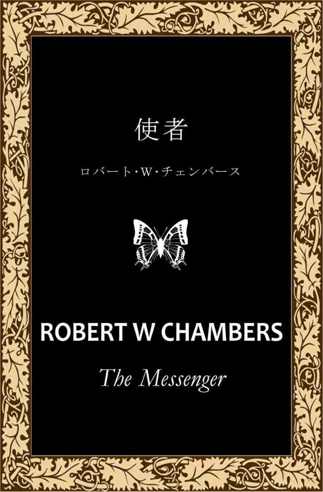
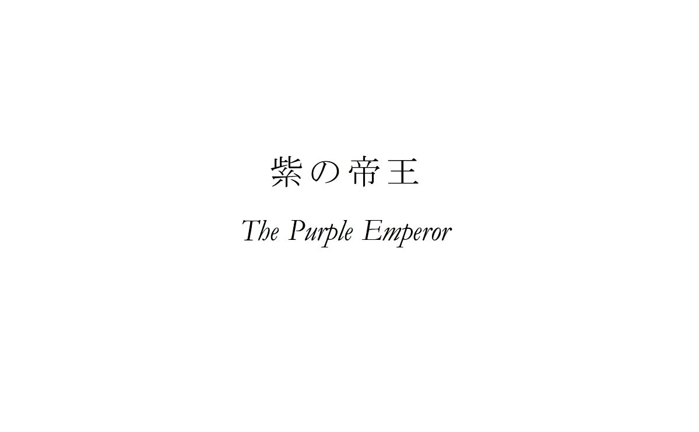
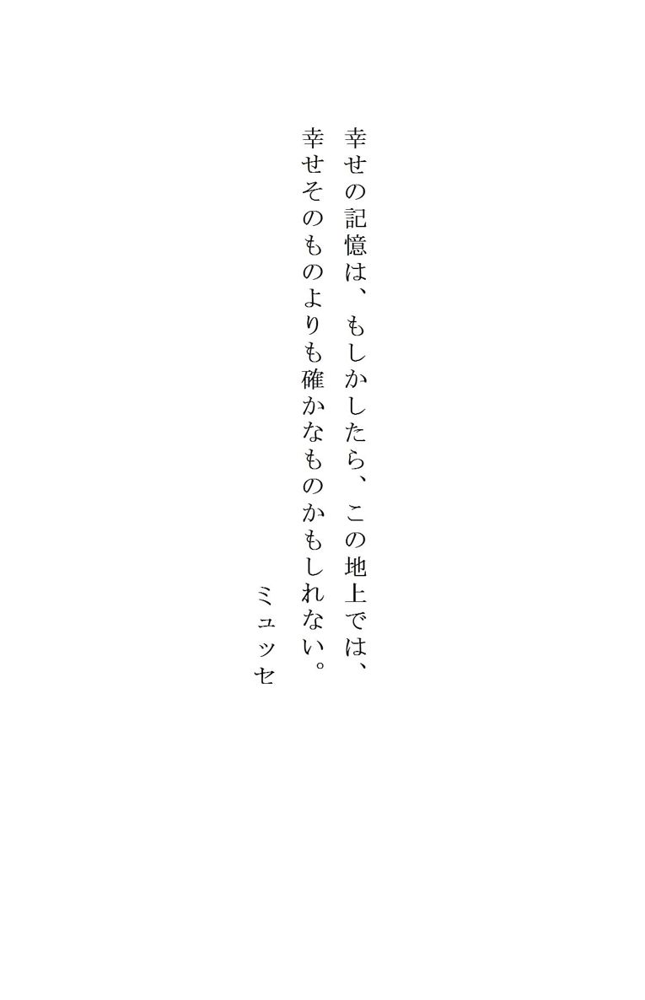
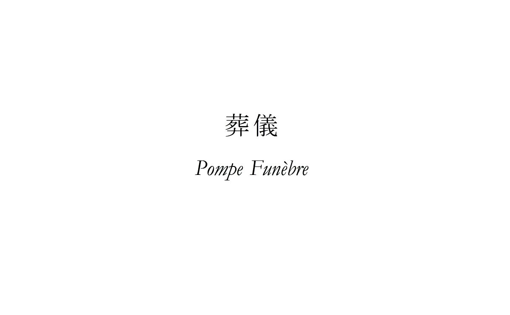
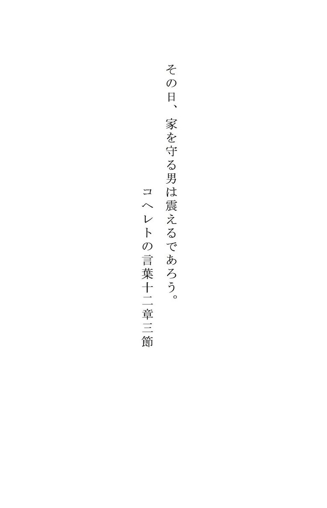
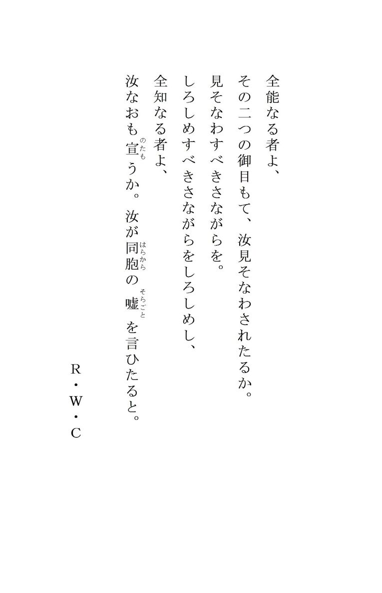
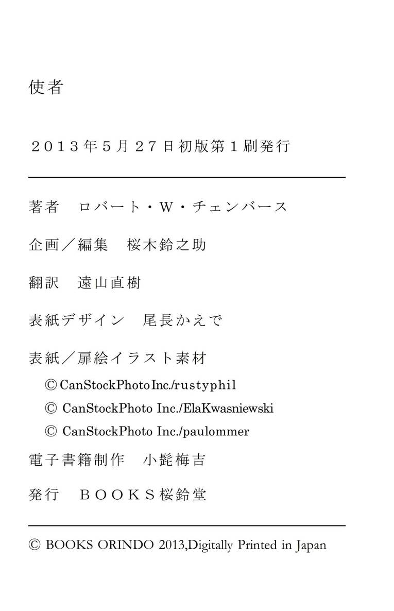

| 使者 | |
| ロバート・Ｗ・チェンバース | |
| BOOKS ORINDO (2013) | |

目次


１
･
紫帝は黙って私を見つめていた。私がもう一度竿を振ると、防水の絹の釣り糸がさらに二メートルほど伸びて、川のよどみの上をしゅるしゅると飛んでいき、三つの毛鉤がアザミの冠毛よろしくふわりと水面に落ちた。紫帝はそれを見てせせら笑った。
「わからんやつだな。ブルターニュには飾り尾のついた毛鉤に食いつくようなマスは一匹もいないんだよ」
「アメリカにはいるさ」私は言い返した。
「ふん！ アメリカにならな」
「イギリスのマスだって飾り尾のついた毛鉤にかかるぞ」私はぴしゃりとやり返した。
「イギリス人がイギリスで何をしようが、俺の知ったことじゃないね」
「そりゃ、あんたは自分と、うねうねかわいい毛虫のこと以外はどうだっていいんだろうさ」私はいよいよ気分を害してそう言い返してやった。
紫帝はフンと鼻を鳴らした。その大きく、つるりとして陽に灼けた顔には、私の神経を逆なでせずにはおかない、いつもの意固地な表情が浮かんでいた。その帽子のかぶり方も私の苛立ちに拍車をかけていたかもしれない。ぺらぺらのつばが両耳にかぶさり、正面の留め金から垂れた二本の短いリボンが、ちょっと風が吹くたびにひらひらとなびくのだ。その狡猾な目とぴんと尖った鼻は、太った赤ら顔にはいかにもそぐわない。
そうやって見つめていた私と目が合うと、彼は忍び笑いを漏らした。
「昆虫のことなら、俺はこのモエラン郡で、いやそれを言うならフィニステール県で一番詳しいんだぞ」
「赤大将だって負けていないさ」私は言い返した。
「嘘だ」紫帝はむっとして反論した。
「それに集めた蝶の数だって、向こうはあんたの倍はあるぞ」私はそう畳みかけ、小川沿いに移動して、水面を挟んで相手の真正面に立った。
「へえ」紫帝はせせら笑った。「じゃあ教えてやろうか、ムッシュー・ダレル。あいつのそのたくさんのコレクションの中にはな、〈紫の帝王〉の異名を持つあの華麗な蝶、アパトゥラ・イリス、通称コムラサキの標本は一つも、ただの一つもないんだぞ」
「それはブルターニュの人間なら誰だって知っているさ」言いながら、私はきらめく水面に釣り糸を投げ込んだ。「でも、あんたがたまたまモエラン郡でただ一人、コムラサキを捕まえたことのある人間だからって、茶マスにも詳しいとは限らんだろう。どうしてなんだ、ブルターニュの茶マスが飾り尾のついた毛鉤には目もくれないっていうのは？」
「そういうものなんだよ」
「でもどうしてだ？ この川のまわりにはトビケラがたくさんいるじゃないか」
紫帝はほくそ笑んだ。「それがどうした。まあ、自分で確かめればいい。飛びつくマスなんかいやしないから」
腕が痛くなってきていたが、私は竹の釣り竿をぐっと握り直し、少し身体の向きを変えて流れに足を踏み入れ、よどみの先に向かって釣り糸をゆらゆらとしならせ始めた。大きな緑色のトンボが一匹、夏の微風に乗ってふらりと飛んできて、エメラルドのような輝きを放ちながらよどみの上でしばし静止した。
「ほら、今だ！ 虫取り網はどこだ！」私は川越しに彼に声をかけた。
「何のために？ あのトンボか？ あんなの十匹ばかり持っているさ――学名アナックス・ジュニウス。発見者ドルーリー※１。特徴は、後翅の内側の角が、雄の場合は丸みを帯びていること、胸部の斑は――」
私は苛々しながら相手を遮った。「もういいよ。まったく、ちょっと虫を指さしただけで蘊蓄を聞かされなくちゃならんのか。いいから、簡単な、平凡なフランス語で教えてくれないか。あの小さな蠅は何ていうんだ――私の横のミオグサの上を飛んでいるやつ。ほら、今水面にとまった」
「なあんだ」紫帝は人を小馬鹿にしたように笑った。「それはリノビア・アンニルスだよ」
「は？」
彼が言葉を継ぐよりも早く、川のよどみでじゃぽんっと音がしたかと思うと、その蠅の姿が消えた。
「ヒヒヒ！ 言っただろう。魚にはちゃんとわかるんだよ。今のが茶マスだ。あいつがあんたに釣られませんように」
そう言って、紫帝は虫取り網と、道具箱と、クロロフォルムの瓶と、青酸カリの小瓶を片付けた。それから立ち上がって道具類を肩にかけると、虫殺しの毒の入った瓶を銀ボタンの並ぶ別珍の上着のポケットに押し込み、パイプに火を点けた。またこのパイプだ。これで一服するところを見ていると、本当にうんざりしてくる。紫帝はブルターニュの農夫のご多分に漏れず、この地方特有のちんまりとしたパイプを使っているのだが、これが探すのに十分、煙草を詰めるのにもう十分、火を点けるのにさらに十分かかるような代物で、そのくせものの十秒で吸い終わってしまうのだ。
生粋のブルトン人らしく、まわりに人などいないかのような様子でこの厳粛な儀式を終え、煙を三回吐き出した彼は、もの思わしげに尖った鼻を掻き、ふらふらとおぼつかない足取りで歩み去っていった。「それじゃ。ヤンキーどもに災いあれ！」と捨て台詞を残して。
私はその姿が視界から消えていくのを見守りながら、この男のせいでこの世の地獄を見ている一人の哀れな娘のことを思って悲しくなった――彼の姪、リース・トレベクである。本人は決して認めることはないが、その柔らかく、ぽっちゃりとした腕についた青黒い痣が意味するところは誰もが承知していたし、宿屋の〈グロワ〉亭に酔っ払った紫帝が入ってきた時に彼女の目に浮かぶ怯えた表情を見ると胸が痛んだ。
彼はリースにろくにものを食べさせていないという噂だった。とはいえ、リース自身はそれを否定してはいる。マリ・ジョセフとジョセフィーヌ・ルロカルは、鳥謝祭※２の翌日、前日に鳥もちを使って捕まえていた三羽のアトリを放したからと、紫帝が彼女を殴るところを目撃している。リースにそれが本当なのかと尋ねたら、その週はもうひと言も口をきいてもらえなかった。私にはどうすることもできなかった。もしも紫帝が欲の皮の突っ張った男でなかったなら、私はそもそもリースに会うことすらできないはずだが、彼は私が支払う週三十フランには逆らえないのだ。
そういうわけで、リースは一日中私の絵のモデルになってくれて、桃色の薔薇の茂みに遊ぶ小鳥のように幸せそうにしている。にもかかわらず、紫帝は私のことを嫌っていて、リースを辛いお針子に戻してやると言ってしょっちゅう脅してくる。おまけに執念深くて、ここブルターニュ地方の名物であり、またたいていのブルトン人にとっては理性の大敵であるリンゴ酒を引っかけた時などには、〈グロワ〉亭の色褪せた楡材のカウンターを叩いて、私と、イブ・デレクと、赤大将の悪口をがなり立てるのだった。
この三人こそは、彼がこの世で誰よりも憎んでいる人間なのだ。私の場合は、私が外国人であり、そしてあの男のことも、あの男の自慢の蝶のコレクションのことも何とも思っていないから。そして赤大将は、彼が自分の向こうを張るアマチュアの昆虫博士だから。
あの男が彼を嫌う理由はそれだけではなかった。
赤大将というのは、大きさの合わないガラスの義眼をはめ、ブランディに目がない、小柄で貧相な男で、そのあだ名は彼のコレクションの目玉である一羽の蝶に由来している。学名ヴァネッサ・アタランタ、通称アカタテハ、あるいは〈赤の大将〉の名で知られるこの蝶は、一度フランスとブルターニュ地方の昆虫学者の間で騒ぎの種になったことがあった。というのも、赤大将はそのへんにいる虫を捕まえて薬品で鮮やかな黄色に染め、それをお人好しの某収集家に、南アフリカ産の極めて珍しい標本だと言って売りつけたのである。
しかしながら、この詐欺行為によって得られた五十フランは、当の激昂した愛好家が一ヶ月後に起こした損害賠償訴訟によってそっくり消えてしまった。そして、カンペルレの刑務所に一ヶ月入れられた後、彼は苦虫を噛み潰したような顔で、酒に飢え、燃え盛る復讐心を胸にこの小さなサン＝ジルダ村に戻ってきた。私たちが彼に赤大将のあだ名を進呈したのは言うまでもないことで、本人は内心腸の煮えくりかえるような思いでその呼び名に甘んじているのだった。
一方、紫帝のその仰々しい呼び名には正当な理由があった。学名アパトゥラ・イリス、通称コムラサキ、またの名を〈紫の帝王〉として知られるあの華麗な蝶の唯一の標本――フィニステール県およびモルビアン県で採取された唯一の標本は、紫帝こと本名ジョセフ＝マリ・グロアネクによって捕獲され、生きたまま持ち帰られたものであることは紛れもない事実なのである。
この珍しい蝶が採取されたことを知った赤大将は、嫉妬で気も狂わんばかりだった。それから一週間というもの、彼は一日と欠かさず紫帝が姪のリースと住んでいる〈グロワ〉亭に赴いて、イカサマを暴いてやろうと、この捕獲されたばかりの蝶を持参の顕微鏡で穴の開くほどに調べた。しかし標本は本物で、どれだけ顕微鏡を覗き込もうと無駄だった。
「薬品は使っていないよ、大将」そう言って紫帝はにやにやと笑った。赤大将は怒りのあまり歯の根が合わないほどだった。
ブルターニュ地方とフランスの自然科学会にとって、モレアン郡でアパトゥラ・イリスが捕獲されたという事実は重要な意味を持っていた。カンペルレの博物館は標本を買い取りたいと申し出たが、守銭奴ではあったものの、金以上に蝶に目のない紫帝は、館長をさんざん冷やかした挙げ句にその申し出を断った。ブルターニュ地方とフランスの各地から、彼のもとに質問とお祝いの手紙が殺到した。フランス科学協会から賞を授与され、パリ昆虫学会からは名誉会員として迎えられた。頑固で知られるブルターニュの農夫だが、それに輪をかけて頑固者の彼は、こうした栄誉の数々に平穏な日常を乱されることはなかった。
しかし、この小さなサン＝ジルダ村の村長に選ばれた時、そしてこうした場合のこの地方の慣習通り、それまでの藁葺きの家を出て、小さな〈グロワ〉亭の一室を村長室代わりにして住み始めた時、彼はそれまでの考えをがらりと変えてしまった。人口百五十人近くの村の村長！ 帝国の主！ そうして彼は鼻持ちならない男になり、毎晩毎晩飲んだくれては、生粋のならず者らしく姪のリース・トレベクに手を上げ、アパトゥラ・イリスを捕まえた話を際限なく繰り返して、赤大将を悔しさのあまり発狂する寸前にまで追い込んだ。もちろん、その蝶を捕まえた場所は秘密にしていた。赤大将は彼の後を虚しく尾け回した。
「ヒヒヒ！」リンゴ酒のコップを前にして顎を撫でさすりながら、紫帝は嫌みったらしく言うのだった。「昨日の朝、あんたがサン＝ジルダの雑木林のあたりをうろうろしているのを見かけたぞ。俺の後を尾け回して、自分もアパトゥラ・イリスを見つけようってかい？ 無駄だよ、大将。無駄無駄」
赤大将は悔しさと嫉妬のあまり顔が土気色になっていたが、翌日には本当に寝込んでしまった。それというのも、紫帝がアパトゥラ・イリスの成体ではなく、生きた繭を持ち帰ったからで、これはもし羽化させることに成功すれば、この珍しい蝶の完璧な標本となる。これがとどめの一撃となった。赤大将は住まいである石造りの小屋に閉じこもり、毎日朝食にパンと、ボラかエビの料理を届けにいくジョセフィーヌ・ルロカルを除いては、もう何週間も村人の前に姿を見せていなかった。
赤大将が村の日常から姿を消したことで、紫帝は初めのうちは彼を小馬鹿にしていたが、やがてついには猜疑心にとらわれるようになった。あの男はどんな悪巧みをしているのだろうか。また薬品を使った実験をしているのか、あるいはこの自分の評判を落とそうと、何かもっと腹黒い計画を立てているのではないか。一日一度、バナレクから片道二十五キロの道のりを歩いて郵便物を運んでくる配達人のルーが、イギリスの消印のある怪しげな手紙を何通か赤大将に届けており、そしてその翌日、自宅の窓辺でにやにやしながら空を見上げ、揉み手をしている彼の姿が目撃されていた。
それから一日か二日後の夜、ルーは〈グロワ〉亭に小包を二つ置いたままにして、通り向かいの私の家に立ち寄ってリンゴ酒を一杯引っかけていった。宿の喫茶室をうろつき回って他人のことに片っ端から首を突っ込んでいた紫帝はその小包を見つけ、消印と送り手の住所を確かめた。一つは四角くて重く、手に持った感じでは本のようだった。もう一方の包みも形は四角かったが、こちらはとても軽く、どうやらボール箱らしかった。どちらも赤大将宛てで、イギリスの消印があった。
戻ってきた配達人のルーから紫帝は情報を聞き出そうとしたが、かわいそうに、小柄な配達人は小包の中身については何も知らず、彼が荷物を持って赤大将の小屋の角の向こうに姿を消すと、紫帝はリンゴ酒をしこたま飲んでわざと飲んだくれ、やがてリースがやってきて、泣きながら叔父を支えて部屋に連れ帰った。部屋に戻った彼は手に負えないほどひどく暴れ、リースが私を呼びに来たので、私はつべこべ言わせずに力尽くで片をつけた。紫帝はこの一件のことも忘れておらず、私に仕返しする機会がやってくるのを待っているのだった。
それが二週間前のことで、それ以来彼と口をきくのは今日が初めてだった。
リースはこの一週間ずっと私の絵のモデルを務めてくれていて、今日は土曜日だし、私も絵筆を手に取るのが億劫だったので、二人で今日はちょっと息抜きをしようということに決めて、彼女は隣のサン＝ジュリアン村にいる小柄な黒目の友達、イヴェットのところに遊びにいき、私はアメリカから持ってきた毛鉤のセットがここブルターニュのマスの口に合うものかどうかを試してみることにしたのだった。
三時間、ひたすら根気強く竿を振っていたが、マスは一匹も釣れず、私は虫の居所が悪かった。私はサン＝ジルダの小川にはマスはいないのだと信じ始めていて、紫帝がひどく長たらしい名前で呼んだあの小さな蠅が茶マスに食われるところを見なかったら、たぶん諦めていただろう。あの光景を見て私は考えた。紫帝の言っていることはおそらく正しいのだろう。あの男がこのブルターニュ地方で這ったり蠢いたりしているありとあらゆる生き物に詳しいことは確かなのだ。
そこで、私はアメリカの毛鉤セットの中から、今しがたマスが飛びついた蠅に似ているものを選び、今まで使っていた三つの毛鉤と付け替えた。それは珍妙な毛鉤だった。釣具屋で愛好者の目を引きつけはするものの、いざ使ってみるとたいていはまるで役に立たない、よくある何とも言いようのない実験的な毛鉤である。しかも飾り尾がついていたが、もちろんこれはナイフですぐに切り捨てた。
やがて準備万端整うと、私は急流に足を踏み入れ、さっき茶マスが浮かんだところめがけて矢のように真っ直ぐ糸を飛ばした。羽毛のようにふうわりと、毛鉤は川面に落ちた。と、びっくりするような水音が上がって銀色が一閃したかと思うと、震える竿の先端から金切り声を上げて回転するリールまで、糸がぴんと張り詰めた。すぐさま私はリールを押さえ、獲物がきらめく身体をのたうたせて水面をバシャバシャと蹴立てているうちに素早く岸に戻った。相手は大物のようで、流れに沿って長い距離を走ることになるかもしれない。重さ二キロ半の竿が、獲物の引きに震えながら、流れるような弧を描いて動いていく。
「ああ、これは鉤竿がいるぞ！」私は大声で叫んだ。今や私は固く信じて疑わなかった。相手は茶マスなどではない。サケだ。
と、私がそうして全体重をかけて暴れる魚と格闘していると、しなやかでほっそりとした娘が一人、私の名前を呼びながら急いで向こう岸に駆けてきた。
「やあ、リース！」ちらと目を上げ、私は言った。「イヴェットとサン＝ジュリアンにいるんじゃなかったのかい」
「イヴェットはバナレクに出かけたの。それで私が帰ってきたら、〈グロワ〉亭で大喧嘩があって、怖くて怖くてあなたを呼びにきたの」
その瞬間、獲物が勢いよく突進して、リールに巻いてあった糸が一杯に伸びてしまったので、やむを得ず私も同じ方向に駆け出した。若鹿さながらに溌剌として優雅なリースは、ポンタヴァンの木靴を履いているにもかかわらず、対岸を走って追いかけてきた。やがて魚は深いよどみに入り、糸を一、二度大きく震わせて、それから再び暴れ始めた。
「〈グロワ〉亭で喧嘩だって？」私は川を挟んで声をかけた。「喧嘩ってどういう？」
「その、喧嘩ってわけでもないんだけれど」リースは震える声で言った。「とにかく、赤大将さんがやっと家から出てきて、叔父と二人で一緒にお酒を飲みながら蝶々のことで言い争いをしているの。叔父はこれまで見たことがないくらい怒っていて、赤大将さんの方はせせら笑ったり、にやにやしたりして。ああ、叔父のあの顔！ まるで見ているこっちまで心がすさんでしまいそうな顔なの」
「でもリース」私はかろうじて笑みを堪えながら答えた。「きみの叔父さんと赤大将が酔っ払って言い合いをするのはいつものことじゃないか」
「ええ。でも――なんて言ったらいいのかしら。とにかく今度のはちがうんです、ムッシュー・ダレル。赤大将さんは三週間前に家に閉じこもるようになってから老け込んで怒りっぽくなっていて、それから――ああ！ 私、叔父のあんな目つきは見たことがなくて。まるであんまり怒ったせいで頭がおかしくなってしまったみたいで。あの目つき......とても言葉にできないような目なの。そしたらそこにテレクが入ってきて......」
「なるほど」私は真顔になって言った。「そいつは困ったな。赤大将はあのドラ息子になんて言ったんだい？」
リースはシダの葉に囲まれた岩に腰を下ろし、その青い瞳に意固地な表情を浮かべて私を見つめた。
イブ・テレクというのは、浮浪者で、密猟者で、赤大将ことルイ＝ジャン・テレクの息子であり、父親から勘当され、紫帝からは村長権限で村を追放されたろくでなしである。この荒くれ者の青年が村に戻ってきたことはこれまでにも二度あった。一度は紫帝の寝室を物色するために（これは失敗に終わったが）。そして二度目は、自分の父親の家に盗みに入るために。こちらは成功したが、しかし彼は村の周辺の森や荒れ野をうろついている姿を何度も目撃されながらも、これまで一度も逮捕されたことはなかった。彼は大勢の前で紫帝を脅し、カンペルレの憲兵たち――藪に覆われた沼地や黄色いハリエニシダの咲く荒れ野を、何キロにもわたって彼を追い回した憲兵たちがたとえ総がかりで邪魔をしようとも、絶対にリースと結婚してやると宣言したのだ。
イブ・テレクが紫帝に何をしようが、この先何をするつもりであろうが、私はほとんど気にはしていなかった。しかし、リースと結婚する云々の誓いについては心穏やかではなかった。この三ヶ月というもの、そのことが頭から離れなかった。カンペルレの女子修道院からサン＝ジルダ村にやってきたリースが最初につかんだものは、私の心だったのだ。長い間、私はこのしなやかな青い瞳の娘と、紫帝との間に血のつながりがあることを信じまいとしてきた。
今日の彼女は、ここフィニステール県の民族衣装である、レースの刺繍の入った別珍の上着と青いスカートを身にまとい、頭にはサン＝ジルダ村の愛らしいコワフ※３をつけているが、そんな田舎風の格好も、仮装行列の衣装のようでかわいらしい。私にとっては、彼女はルイ十五世の開いた園遊会で、仮装姿でその従兄弟たちと踊っていた多くの貴族の娘たちに負けず劣らず美しく、淑やかに見えた。イブ・テレクが大手を振ってサン＝ジルダに戻ってきたとなれば、私もその場にいた方がいいだろう。
「リース、テレクは何て言っているんだい？」穏やかな水面の上で震える糸を見ながら、私は尋ねた。
リースの頬が濃い薔薇色に染まった。「それは......」そう言って、彼女は心持ち顎をもたげた。「知っているでしょう。あの人がいつも言っていることは」
「きみを連れていくって？」
「ええ」
「たとえ紫帝と赤大将と憲兵に阻まれても？」
「ええ」
「それで、きみは何と答えるんだい、リース？」
「私？ 私は何も......」
「じゃあ、私がきみの代わりに答えよう」
リースは造りのいい、先の尖った木靴を見下ろした。ポンタヴァンで特別にあつらえてもらったその靴は、彼女の小さな足にぴったりと合っていた。この娘の唯一の贅沢品だった。
「きみの代わりに私が返事をしてもいいかい、リース？」
「あなたが、ですか。ムッシュー・ダレル」
「ああ。私に返事をさせてくれないか」
「え、だって......。どうしてあなたが関わり合いに？」
獲物はとてもおとなしくしていたが、私の手の中の竿は震えていた。
「きみが好きだからだよ」
彼女の頬に差した薔薇色がさらに濃くなった。リースはそっと息を吐き、巻き毛の頭を両手で抱えた。
「リース。きみが好きだ」
「本気で......言っているんですの？」彼女はたどたどしい声で言った。
「本気だよ。きみが好きだ」
リースはその愛らしい顔を上げ、川を挟んで私を見つめた。
「私もです」答えた彼女の目の中で、涙が星のように輝いた。「そっちに行ってもいいかしら？」
２
･
その夜、イブ・テレクは自分をかくまうことを拒んだ父親への復讐を誓って、サン＝ジルダ村を出ていった。
街道にたたずむその姿が今でも目に浮かぶ。藁を詰めた木靴から伸びる青銅の柱のような脚。風雨に晒され、着古されたせいで、破れて泥にまみれた丈の短い別珍の上着。そしてその目――荒々しく、落ち着きがなく、血走った目。そんな姿で道に立つ彼を、赤大将は甲高い声で罵り、ひょこひょこと石造りの小さな家に戻っていったのだった。
「覚えていやがれ！」
そう叫んだイブ・テレクは、父親に向かって腕を伸ばし、下品な手振りをしてみせた。それからさっと銃を構えて軽く一歩前に踏み出したが、しかし引き金を引く前に私がその喉首をつかみ、そして次の瞬間、私たちはバナレク街道の上を転げ回っていた。相手を振りほどくために、私はやむなく彼の耳の後ろのあたりをしたたかに殴りつけた。やがて土埃を払いながら立ち上がった私は、あの男の先込め式の鳥撃ち銃を壁に叩きつけてばらばらに壊し、ナイフを川に投げ捨てた。紫帝は目に薄気味悪い光を浮かべて見守っていた。見るからに、私がテレクに絞め殺されなかったのを残念に思っているようだった。
「あいつは自分の父親を殺すところだったんだぞ」〈グロワ〉亭に向かって歩きながら、すれ違いざまに私はそう言ってやった。
「知ったことか」紫帝は唸るように答えた。その目の中に剣呑な光があった。一瞬私は、相手が襲いかかってくるのではないかと思った。しかし彼はただひどく酔っ払っていただけで、私は彼を押しのけて、疲れた身体と、やりきれない思いを抱えて自分の部屋に向かった。
一番困ったのは眠れないことだった。紫帝がリースをいじめているのではないかと心配だったのだ。私はシーツをかぶったまま転々悶々としていたが、やがてそれ以上じっとしてはいられなくなった。身支度は適当に済ませた。厚手の靴下の上に木靴を引っかけ、半ズボンにセーター、帽子という出で立ちだった。それから首にスカーフを緩く巻きつけて、虫喰いだらけの階段を下りて月明かりに照らされた通りに出た。紫帝の部屋の窓辺には蝋燭が一本燃えていたが、部屋の主の姿は見えなかった。
「たぶん酔い潰れているんだろう」私は呟き、ぶらりと歩き始めた。赤大将の家のそばを通りかかると、灯りはついていないものの扉が開いているのが見えた。私は生け垣の中に足を踏み入れ、万が一イブ・テレクがあたりをうろついていれば、空き巣を狙われるのではないかと考えて扉を閉めておいた。
扉が開かないように石で押さえをすると、私は冴え冴えとしたブルターニュの月夜の散策を続けた。眼下に見える柳に覆われた沼地では、一羽のナイチンゲールの歌が響き渡り、沼のほとりの丈の高い草むらの中からは、無数の蛙たちの低音部の合唱が聞こえてくる。
帰り道につく頃には東の空が明るくなり始めていて、崖の上の草原に、高波の打ち寄せる浜辺に仕事に向かう一人の海草拾いが、白みゆく水平線を背に影絵のように浮かび上がっていた。長い熊手を肩に担いで支え、その歌声が、草原を渡る海風に乗って私のところまで運ばれてくる。
聖ジルダよ！
聖ジルダよ！
われらのために祈りたまえ、
われらを守りたまえ、
われら海にて骨折る者らを。
村の入り口にある聖母像の前まで来ると、私は帽子を脱いでひざまずき、祈りを捧げた。たとえ私が自分のことを祈るのを忘れていたとしても、きっと聖母様はリースにはもっと優しくしてくださるだろう。この像は白い影を落とすと言われている。地面を見下ろしてみたが、見えるのは月明かりだけだった。やがて私はとても安らかな気持ちで再びベッドに入ってぐっすり眠り、やがて窓の下を走る道から聞こえてくるサーベルのかちゃかちゃという音と、馬の蹄の音で目を覚ました。
「まいったな」私は思った。「もう十一時じゃないか。カンペルレの憲兵隊が来ているってことは」
私は懐中時計を見た。まだ八時半で、毎週木曜日にカンペルレの憲兵隊が巡回に来るのは十一時だから、私は今日に限って彼らがなぜこんなに早くやってきたのかと内心首をひねった。
「そうか！ テレクを捕まえにきたんだな」私は目を擦りながらもごもごと呟き、狭苦しい洗面所に飛び込んだ。
身支度が済まないうちに控えめなノックの音がしたので、剃刀を片手に扉を開けた私は、驚きのあまり声も出ずにその場に立ち尽くした。リースが、その青い瞳に不安の色を浮かべて戸口に身をもたせかけていたのだ。
「リース！ いったいどうしたんだい？」私は驚きの声を上げた。しかし彼女はまるで傷ついた鷗のように私にすがりつくだけだった。部屋に招き入れて顔を上げさせると、ようやく彼女は悲痛な声で言った。
「ああ、ディック！ あなた逮捕されるの。でも私、あの人たちの言うことをひと言でも信じるくらいなら、死んだ方がましだわ。ううん、聞かないでちょうだい」そう言って彼女は泣き崩れた。
何やら本当に深刻な事態になっていることを悟った私は、上着と帽子を身につけ、片手でリースの腰を抱いて階段を下り、表に出た。馬に乗った憲兵が四人、入り口の前で待っていた。その背後ではサン＝ジルダ村の全住民が幾列もの人垣をつくり、固唾を呑んで事態を見守っていた。
「やあ、デュラン！」私は憲兵隊長に声をかけた。「私を逮捕するのなんのって、いったいこれは何の冗談だ？」
「本当なんだ、友よ」デュランは沈んだ声で同情するように言った。私は彼の拍車のついたブーツから、サーベルを吊るす黄土色のベルトに目を移し、さらに目線を上げて上着のボタンを一つまた一つと辿っていくと、やがて相手の困惑した顔と向き合った。
私は話にならないとばかりに言い返した。「どうして？ ほら、官憲お得意のだんまりなんか通用しないぞ！ 聞かせてもらおう、容疑は何だ？」
〈グロワ〉亭の戸口に座ってこちらを見つめていた紫帝が口を開きかけたが、思い直して立ち上がり、宿の中に入っていった。憲兵たちは曰くありげに目をぐるりと見回し、また無表情の仮面に戻った。
私は焦れったくなってさらに問うた。「ほら、デュラン。容疑は何なんだ？」
「殺人だ」憲兵隊長はぼそりと答えた。
「殺人だって！」私は信じられないとばかりに声を上げた。「馬鹿馬鹿しい！ 私が人殺しに見えるか？ この馬鹿、馬から下りて答えるんだ。殺されたのは誰なんだ？」
デュランは叱られた子供のような情けない様子で馬から下り、こちらに歩み寄って手を差し出し、取りなすようににっこりと笑った。
「あんたを告発したのは紫帝なんだ。それで、玄関にあんたのスカーフが見つかったもんだから――」
「ちょっと待った。玄関って誰の家の玄関だ？」
「誰のって、だから赤大将の家のだよ」
「赤大将の？ やっこさん、今度は何をやらかしたんだ？」
「何もしちゃいないさ――ただ殺されただけだ」
憲兵たちに連れられて赤大将の石造りの粗末な家に行き、血の飛び散った部屋を見せられてもなお、私は自分の目が信じられなかった。しかし気味の悪いことに遺体はなく、石の床に胸の悪くような血溜まりだけが残されていて、そしてその真ん中に、人間の手が一つ転がっていた。その手が誰のものであるかについては、疑いの余地はなかった。赤大将に会ったことがある者ならば誰でも、そのおぞましい血の海の中に転がっている縮こまった肉片が赤大将の手であることはわかっただろう。私には、それは巨大な鳥か何かの切断された鉤爪に見えた。
「なるほど。殺人事件発生ってわけだ。何かしたらどうなんだ？」
「何かって？」
「さあね。警視を呼ぶとか」
「警視ならカンペルレにいる。電報で知らせてある」
「じゃあ医者を呼んで、この血がどれくらい前から凝固しているかを調べるんだ」
「カンペルレから科学者が来ている。その人は医者でもある」
「その人は何と言っている？」
「わからんそうだ」
「それであんたは誰を逮捕するつもりなんだ？」床の血溜まりから目を逸らし、私は尋ねた。
憲兵隊長は重々しい口調で答えた。「どうするかな。あんたは紫帝の証言で名前が挙がっている。やっこさん、今朝出かけた時にあんたのスカーフを見つけたんだそうだ」
「これだよ、石頭のブルトン人は！」私は完全に頭にきて、彼を怒鳴りつけた。「あいつはイブ・テレクのことは何か言っていたか？」
「いや」
「そりゃそうだろう。あいつはテレクが昨日の夜父親を殺そうとして、私がテレクの銃を取り上げたことを忘れているんだよ。あれもこれも、殺された男の玄関で私のスカーフを見つけた途端になかったことになるのさ！」
「喫茶室に入ろう」デュランはおろおろしながらそう言った。「中で話そう。当たり前じゃないか、ムッシュー・ダレル。私だってあんたが人殺しだなんてこれっぽっちも思っていなかったよ」
四人の憲兵と私は通り向かいの〈グロワ〉亭の喫茶室に入った。中は地元の人たちで混雑していて、みな煙草を吸い、リンゴ酒を飲み、文明人にとってはどれも一様に耳障りに聞こえる五つか六つの方言でぺちゃくちゃとおしゃべりをしている。私は人混みを押し分け、立ったまま安葉巻を吸っている、カンペルレから来たという小柄な科学者、マクス・フォルタンに近づいていった。
「ひどい事件ですね」そう言って、フォルタンは私の手を握り、自分が吸っているのと同じ葉巻を差し出してきたが、私は丁寧に断った。
私は言った。「それで、ムッシュー・フォルタン。どうやら、紫帝は今朝赤大将の家の玄関で私のスカーフを見つけて、それを根拠に」と、ここで私は紫帝を睨みつけた。「私が犯人だと結論づけたようだが、じゃあここで一つ、本人に聞いてみようか」私は突然紫帝に向かって声を上げた。「あんた、赤大将の家で何をしていたんだ？」
紫帝はぎくりとして血の気をなくし、私は勝ち誇ったようにそんな彼を指さした。
「ほら、効果てきめんだろう。見るがいいあの狼狽えぶりを。それでも、私はあいつに殺人の罪を着せたりはしないがね。いいかい諸君、あの男は私同様、赤大将を殺した犯人を知っているんだ」
「俺は知らん！」紫帝はわめいた。
「知っているだろう。犯人は、イブ・テレクだ」
「俺は信じないぞ」往生際悪く言いながら、彼は目を伏せた。
「そりゃそうだろう。あんたはブルトン頭だからな」
紫帝はまた怒鳴り声を上げた。「俺は石頭じゃないぞ。俺はサン＝ジルダ村の村長だ。俺はイブ・テレクが父親を殺したとは思わん」
「あんた、昨日の夜あいつが赤大将を殺そうとしたのを見ていただろう」
紫帝は低い声で唸った。
私はさらに続けた。「それからイブ・テレクが父親に向かって殺してやると言うのも聞いていたな。あいつが赤大将を罵って、殺してやると誓ったのを。そして赤大将は本当に殺され、死体は消えた」
「あんたのスカーフはどう説明をつけるんだ？」紫帝はせせら笑った。
「落としたに決まっているじゃないか」
「じゃあ、あんたが昨日の夜、赤大将の家のまわりをうろついているのを見かけた海草拾いは？」そう言って、紫帝はにやりと笑った。
私はこの男のあまりの底意地の悪さに呆れ返った。
「もういいよ。確かに間違いなく、昨日の夜私はバナレク街道を散歩していたし、赤大将の家の灯りがついていないのに玄関が開いていたから、立ち寄って扉を閉めた。そのあとディネの森まで歩いて、それからサン＝ジュリアン村の近くまで行った。そこから崖の上にその海草拾いがいるのが見えた。その男の歌っている歌が聞こえるくらい近くだった。それが何だっていうんだ？」
「それからどうした？」
「聖母像の前でお祈りをして、それから家に帰って、デュラン隊長一行のサーベルの音がかちゃかちゃうるさくて目が覚めるまで眠っていたよ」
「それで、ムッシュー・ダレル」そう言って、紫帝は太い指を一本上げてみせ、意地悪そうな目で私を一瞥した。「ムッシュー・ダレル、昨日真夜中の散歩をしている時、あんたはどっちの靴を履いていたんだ――木靴か、それとも普通の靴か？」
私はしばし考えた。「普通の――いや、木靴だ。厚手の靴下の上に木靴をつっかけて出たんだった」
「普通の靴か、それとも木靴か、どっちだ？」
「だから木靴だって」
「この木靴はあんたのか？」そう言って、紫帝は甲の部分に私の頭文字の刻み込まれた木靴の片方を掲げてみせた。
「そうだが」
「じゃあこの血はどういうことだ？」叫びながら、彼はもう一方の木靴を掲げた。その表面には血飛沫がついていた。
「見当もつかんね」私は涼しい顔で答えた。が、心臓は早鐘を打ち、腸は煮えくり返りそうだった。
「このわからず屋め！」私は怒りを抑えながら言った。「イブ・テレクが捕まって白黒ついたら、ただじゃ済まさないからな。デュラン隊長、私が容疑者だと思うんだったら職務を全うするがいい。逮捕されてもいいが、ただ一つだけ頼みがある。赤大将の家に入らせてくれ。あんたたちが見逃した手がかりが見つかるかもしれん。もちろん、警視が到着するまで現場は乱さない。ああ、まったく、どいつもこいつも！」
「往生際の悪いやつだ」紫帝はそう言って首を振った。
「私が赤大将を殺す動機は何だ？」私が軽蔑するようにその場にいる全員に向かって尋ねると、みなが口をそろえて答えた。「そんなものない！ テレクが犯人だ」
私は入り口に向かう途中で振り返り、紫帝に向かって立てた指を振ってみせた。
「見ていろ。この落とし前はつけてもらうぞ」そう言って、私はデュラン隊長の後について通りを渡り、赤大将の家に入った。
３
･
憲兵隊は私の頼みを聞き入れてくれて、垣根のそばの門のところに抜き身のサーベルを手にした見張りを一人立たせた。
「逃亡しないと宣誓してくれ」公私の板挟みになった哀れなデュランが言った。「そうすればどこへでも好きなところに行ってかまわんから」
しかし私はその申し出を断り、 手がかりを探して家の中をうろうろし始めた。赤大将の吸ったパイプの灰。埃をかぶった野菜入れの中の足跡。近くにあるル・プルデュ村産のリンゴ酒の瓶。埃、埃、埃（まったく、どこもかしこも埃だらけだ！）。こうしたものをきわめて重要だと判断する者もいるのだろうが、しかし私は犯罪の専門家ではなく、ただの愚かで平凡な素人探偵でしかない。そうして私は分厚い狩猟用のブーツで現場の足跡を踏み荒らし、手近にある机の上には赤大将の顕微鏡が置かれていたものの、それを使ってパイプの灰を調べる気にもなれなかった。
やがてようやく、私は目当てのものを見つけた。それは数本の長い麦藁で、真ん中のあたりがおかしな具合に潰れて折れ曲がっていて、私はイブ・テレクを終身刑にする証拠を見つけたと確信した。それは顔の真ん中に鼻があるのと同じくらいに見逃しようのない、明白な証拠だった。
それは木靴に中敷き代わりに入れる麦藁で、踵に踏まれた部分が潰れ、靴からはみ出た部分が真っ直ぐに伸びているのだ。サン＝ジュリアン村の近くに住んでいる一人の漁師を除けば、サン＝ジルダ村で木靴に麦藁を詰めて履いている者はおらず、しかもその漁師が木靴に入れているのはごく普通の黄色い小麦である。一方で、私の見つけたこの数本は内陸にしか育たない赤色小麦で、そしてサン＝ジルダ村の住人なら誰もが知っていることだが、イブ・テレクが木靴に入れているのはこちらの方である。会心の大発見だった。
それから三時間後、バナレク街道で上がったしわがれた叫び声を聞いて窓際に歩み寄った私は、血にまみれ、衣服は乱れ、帽子もかぶらず、逞しい両腕を後ろ手に縛られた姿で、馬に乗った二人の憲兵に挟まれて、頭を垂れて歩いているイブ・テレクを見ても驚かなかった。彼を取り囲む人だかりは、「父殺し！ 父殺し！ 殺人者に死を！」と叫びながらみるみる膨らんでいった。私のいた窓の前を通り過ぎる時、テレクの埃をかぶった木靴にべったりと泥がついていて、靴の踵からは赤い麦藁が数本突き出しているのが見えた。
私は問題の麦藁を顕微鏡で調べてみようと、赤大将の書斎に引き返した。そうして一本ずつ念入りに調べていったが、やがて目が痛くなって、肘掛けに肘をついて顎を手のひらにのせ、椅子の背にもたれかかった。運のいい探偵だっているのだろうが、私はそれほど運に恵まれてはいなかった。その麦藁が木靴の中敷きとして使われていた形跡はまったくなかったのだ。
駄目押しをするかのように、廊下の反対側に置かれた、この地方でつくられた彫刻入りの収納箱が目に留まった。閉じた蓋の隙間から似たような赤い麦藁が何本も突き出している。しかもそれは私がさっき見つけたものと同じく、蓋の重みで折れ曲がっていた。
私はやる気をなくしてあくびをした。私はどう考えても探偵向きではないようだ。それでも、現実の手がかりと探偵小説の中に出てくる手がかりとの違いについて、未練がましく思いを巡らせてみたりした。しばらくして腰を上げた私は、件の収納箱に歩み寄って蓋を開けた。中には赤い麦藁が詰めてあり、この詰め物の上に見慣れないガラスの広口瓶が二つ、小さな薬瓶が二つか三つ、クロロフォルムと張り紙のされた空の瓶がいくつか、青酸カリウムの入った昆虫採取用の広口瓶が一つ、そして本が一冊あった。箱の奥の方には、イギリスの消印のある手紙が数通と、破られた小包の包み紙が二枚。すべてイギリスから発送されており、いずれも受取人は赤大将で、宛名書きは彼の本名で〈フィニステール県モエラン郡サン＝ジルダ村 ルイ＝ジャン・テレク様〉となっていた。
私は一切合切を机に運んで収納箱の蓋を閉め、腰を下ろして手紙を読んだ。手紙はいずれも商業フランス語で書かれており、イギリス人の手によるもののようだった。
訳出はすらすらとできたので、一通目の文面を以下に記す。
ロンドン 一八九四年六月十二日。
拝啓。本月九日の貴殿からのお問い合わせ、拝受の上内容を確認いたしました。イギリスの鱗翅類に関する最新の書物は、ブロウザー著『英国蝶採取指南』でございます。注釈と図解入り、及びトーマス・スニッファー卿の序文付き、子牛の革装丁、全一巻で価格は五ポンド。フランス通貨で百二十五フランでございます。郵便為替でご注文頂ければ即座に対応致します。今後とも変わらぬご愛顧のほど、何卒よろしくお願い致します。
敬具
フラッドリー＆トゥーマー書店
ロンドン南西区リージェント通り四七十番地
次の手紙はこれよりもさらにつまらないものだった。ただ代金が受領され本が発送されたという通知である。三通目が私の注意を引いた。翻訳はすらすらとできたので、以下に引用する。
拝啓。七月一日に拝受致しました貴殿の手紙を店主のフラッドリーに見せましたところ、店主は貴殿の質問に多大な関心を示し、『英国蝶採取指南』の六三十頁にて言及されております、ベルリン昆虫協会のシュワイネリ教授に貴殿の手紙を転送致しました。先日同教授からの御返事が届きましたので、弊社でフランス語に訳出致しましたものを同封致します。（別紙を御参照下さい）。シュワイネリ教授から、教授自ら監督の下に調合されたシチルの瓶を二本、貴殿に送るようにとの御依頼を承りました。こちらは別便にて発送致します。ご満足頂ければ幸いに存じます。今後とも変わらぬご愛顧を賜りますよう、何卒よろしくお願い致します。
敬具
フラッドリー＆トゥーマー書店
同封の用紙にはこう書かれていた。
フラッドリー＆トゥーマー様
拝啓。シタリンは複合炭化水素の一つで、アントワープのシュヌート教授によって昨年初めて用いられたものであります。小生は同じ頃に類似の化合物を発見し、シチルと命名しました。以来各地において使用し、大いなる効果を上げております。本薬の効果は磁石のごとく顕著であります。貴殿に本薬の小瓶を三本送付致しますので、そのうち二本を、サン＝ジルダにお住まいの質問者の方に、小生からの感謝の言葉を添えて転送して頂ければ幸いに存じます。ブロウザー氏による名著『英国蝶採取指南』の六三十頁に引用されております拙文は、すべて事実であります。
敬具
学術博士・神学博士・科学博士・理学修士
ハインリッヒ・シュワイネリ
この手紙を読み終えると、私はそれを折りたたみ、他の二通と一緒にポケットに入れた。それから問題のブロウザー氏の著作、『英国蝶採取指南』をひもといて、六三十頁を開いた。
赤大将がこの本を買ったのはついこの間のことで、他の頁はまっさらであるにもかかわらず、六三十頁だけは指紋で黒く汚れ、一番下の段落は鉛筆の線でぐるぐると幾重にも囲まれていた。以下がその段落である。
「シュワイネリ教授曰く、『羽の動きが速く、高く舞い上がるアパトゥラ・イリスを捕獲するために、従来収集家たちが用いてきた方法は二つある。一つ目の、柄の長い虫取り網を使う方法の場合、うまくいく確率は千回に一回である。二つ目の、地面に腐肉、たとえば猫の死体などといった餌を置いておく方法は、熱心な収集家にとってさえ不快であるだけでなく、効果のほども非常に心許ない。かの麗しき蝶がお気に入りの楡の木のてっぺんを離れて、差し出された腐った餌のまわりを舞い飛ぶ確率は五百回に一度であろう。私はシチルこそが、この美しき蝶を、捕まえやすい地表に確実に誘き寄せる餌であることを発見した。楡の木の下に黄色い皿を置き、シチルを一オンス垂らせば、三十キロ圏内のアパトゥラ・イリスが一羽残らず集まってくるだろう。ゆえに、収集家が少量であれシチルを携帯していて（たとえコルク栓をした瓶に入れてポケットに入れていたとしても）、もしも一時間以内に一羽もアパトゥラ・イリスを見つけることができないとすれば、その地域にはアパトゥラ・イリスはいないのだと諦めるほかはないだろう』」
この別紙を読み終えた私は、長いこと懸命に頭を働かせていた。それから二つの瓶を調べた。どちらも〈シチル〉と書かれた張り紙がされていた。片方は満杯で、もう一方は若干減っていた。「残りは赤大将の死体と一緒にあるにちがいない」私は思った。
「たとえコルク栓をした瓶に入れていたとしても――」
私は一切合切を収納箱に戻して丁寧に藁の上に並べ、蓋を閉めた。私が〈グロワ〉亭の戸口をくぐる時、見張り役の憲兵が恭しく敬礼をしてきた。宿は興奮した野次馬に囲まれ、廊下は憲兵と農夫とでごった返していた。あちらこちらから、村人たちが真犯人が捕まったと言って温かい言葉をかけてくれた。しかし私は黙って彼らを押しのけ、リースを探して二階に駆け上がった。ノックをするとリースは扉を開き、抱きついてきた。私は彼女を抱きしめて口づけをした。しばらくしてから私は彼女に、黙って私の言う通りにしてほしいと告げ、彼女はそれを承知してくれて、その従順でいながらも凛とした様に私は胸を打たれた。
「じゃあ、今すぐサン＝ジュリアンのイヴェットのところに行くんだ。あの娘に頼んで、荷馬車に鞍をつけてカンペルレの女子修道院まで走らせてもらってくれ。何も訊かないでそうしてくれるかい、リース」
彼女は私の顔を見上げ、「キスして」と無邪気に言った。まもなく彼女は部屋を出ていった。
私は勝手に紫帝の部屋に入り、アパトゥラ・イリスが入れられているガーゼで覆われた飼育箱の中を覗き込んだ。私の思っていた通りだった。蛹は空っぽで中が透けており、背部の真ん中に大きな割れ目があった。そして、飼育箱の中に張られた網の上で、完璧な美しさの蝶が一羽、艶やかなその紫色の羽を動かしていた。蛹の中の寡黙な住人にして美の象徴たる〈紫の帝王〉ことコムラサキは、すでに羽化していたのだ。
その時、私は身の毛もよだつような恐怖に襲われた。今の私にはそれが黒司祭に対する恐怖だったことがわかるが、しかしその当時も、そしてその後の数年の間も、私は黒司祭が実在するなどとは思ってもいなかったのだ。
そうして私が飼育箱の前で身を屈めている間も、表は村人たちの上げる叫び声で騒然としていて、やがて「父殺し！」の怒声が上がったかと思うと、でこぼこの街道を行く荷馬車のがらがらという音に続いて、去っていく憲兵たちの靴音が聞こえた。私は窓辺に歩み寄った。荷台の上に、二人の憲兵に挟まれたイブ・テレクが座っていて、荷馬車をぐるりと取り囲んだ馬上の憲兵たちが、抜き身のサーベルでかろうじて人だかりを牽制していた。
「父殺し！」村人たちは口々に叫んでいた。「犯人に死を！」
私は窓辺を離れ、ガーゼに包まれた飼育箱を開いた。人差し指と親指で、そっとそっと、それでいてしっかりと、コムラサキの閉じられた四枚の羽をつまみ、傷つけないように持ち上げた。それからそれを後ろ手に隠したまま喫茶室に下りていった。
イブ・テレクに死刑をと叫ぶ村人たちでごった返す室内で、三人だけが火のない大きな暖炉の前に座っていた。デュラン隊長、カンペルレの科学者マクス・フォルタン、そして紫帝。紫帝は私が入ってくると決まり悪そうな顔をしていたが、私はそれを無視して真っ直ぐフォルタンに歩み寄った。
「ムッシュー・フォルタン。炭化水素については詳しいですか」
「私の専門ですが」彼は驚いた様子で答えた。
「シチルという薬品のことを聞いたことはありますか」
「シュワイネリ博士のシチルですか？ ありますとも！ 香水をつくるのに使うんです」
「よかった！ 匂いはあるのですか」
「ない――と言いますか、あると言いますか。シチルがそこにあれば必ずわかるのですが、実際のところ、はっきりと匂いがあるとは誰も言い切れないのです。それにしても――」こちらを見つめたまま、フォルタンは言葉を継いだ。「奇遇ですね、そんなことを聞かれるのは。今日は一日中ずっと、シチルの匂いがするような気がしていたんですよ」
「今もしますか？」
「ええ。よりいっそう強く」
私は入口に駆け寄り、コムラサキを放した。優美な蝶は空中でしばし羽を動かし、あちらへこちらへと当てもなくひらひら飛んでいたが、やがて驚いたことに、堂々と羽を広げて喫茶室に舞い戻ってきて、暖炉の前の床石の上にとまった。私はしばし困惑していたが、その時紫帝の様子が目に入って、一瞬ですべてを理解した。
「あの石を持ち上げるんだ！」私はデュラン隊長に向かって叫んだ。「鞘を使ってこじ開けろ！」
突然、紫帝が椅子に座ったまま前に突っ伏した。顔は不気味なほどに白く、恐怖のあまり口がだらりと開いていた。
「シチルとは何だ？」私はその腕を掴んで叫んだ。が、彼はそのまま椅子から転げ落ちて、どさりと音をたててうつぶせに床に倒れた。それと時を同じくしてフォルタンが悲鳴を上げ、私はそちらを振り返った。
デュラン隊長は片手で床石を支え、もう一方の手を驚きのあまり宙に浮かせたままの格好で固まり、フォルタンは動揺のあまり立ちすくんでいた。二人の足下、床石のはめ込まれていた窪みの中に、押し潰され、血にまみれた人間の肉塊が横たわっていた。その真ん中で、安物のガラスの義眼が虚ろに光っていた。私は紫帝をつかんで引きずり起こした。
「見ろ！ 見るんだ、あんたの昔馴染み、赤大将を！」
私は怒鳴ったが、しかし紫帝は虚ろな笑みを浮かべるばかりで、ぶつぶつ呟きながら目玉をごろりと回した。
「蝶に置き餌だと！ シチルだと！ だめだ。甘い甘い甘い！ そうはさせんぞ、ええ、大将。〈紫の帝王〉の持ち主は俺だけなんだ。〈紫の帝王〉は俺様だけだ！」
猿ぐつわをされて手足を縛られ、口に泡を浮かべ、わめき立てる狂人となった紫帝をカンペルレへ運んでいくその同じ馬車に乗って、花嫁を迎えるために私もまたカンペルレに向かった。
さて、以上が〈紫の帝王〉の物語である。いつか気が向いたならば、次はもっと愉快な話をしよう。しかし、あの時釣針にかかった魚について、あれが大物のサケだったのか、あるいは小振りな若サケだったのか、それとも茶マスだったのかは教えられない。というのも、私とリースは約束を交わしたのだ。お互い何があろうとも、あの魚に逃げられてしまったという恥ずかしい真相は他言無用であると。

・
風吹き荒れる空
西には荒れ野が広がる。
海の、奇妙に不穏な低いざわめきに――
鷗の啼き声がひとつ。
潮に洗われつつ、
岩々は薄暮に憮然と横たわる。
砕ける波が飢えの白い筋を刻む――
満たされずに。
ベイトマン

・
私が最初にその姿を見た時、墓守は石の陰にじっと立っていた。ほどなく彼はまた前に進み、ときおり足を止めては、私をひやりとさせずにおかない、あのおろおろとぎこちない動きで右に曲がり左に曲がりする。
その行く手には、茶色く濁った小川に沿って散らばり、積み重なったまま湿り気を帯びた枯苔や落葉が敷かれており、そして私は、彼の用件は何だろうかと思いつつ、腐葉土をそっと踏みしめながらその後を追った。一度か二度、足音を聞かれた。彼がぴたりと足を止めるのでそうとわかるのだが、するとその姿は、この色彩に乏しい森の風景に、黒と橙の色を添える。しかし彼は必ずまた前進し、ときおりあたかも死者に急かされるかのように足を早める。
私がこの十一月の森の中で追いかけているのは、この世界で独りぼっちで死んでいく小さき者たちを土に埋めるべく、神が遣わされた小さな生き物たちの一つである。葬儀屋であり、墓守であり、唖者であり、墓堀でもあるこの生き物は、黒と橙の衣に身を包み、世間に知られることなくひっそりと死んでいくあらゆる者たちを土に埋める。それゆえに、人はそれを――この黒と橙の小さな虫を――〈埋葬虫〉と呼ぶ。
それにしても、何という急ぎようだろうか。灰色の空を見上げると、互いに絡まり合う冬枯れの木枝が、肌には感じられない風に吹かれて揺れ、木々のてっぺんで枯葉がかさかさと音をたて、どんぐりが地面に落ちる音がする。黒っぽい色の鳥が一羽、積み重なった枯枝の上から私を見つめ、落ち葉の上をぱたぱたと走り去っていった。
埋葬虫は今、地面の小さな割れ目の中にいて、頭上の茶色い枯芝の生えた一帯を目指して、枝や亀裂をあくせくと乗り越えていく。助けることはできなかった。それに、彼があまりにも懸命なものだから、手出しははばかられた。
私はしばし足を止めた。この生きた虫の、死者を探し当て、葬ることへの熱意、この小さな森の世界――ここで私は、リースがハリエニシダの花々に囲まれ、風に乗って飛ぶウタツグミよろしく歌い戯れる春の訪れを待っていたのだ――に満ちる死と腐敗の匂い。こうしたものすべてが私の心を惑わせ、足を鈍らせた。
埋葬虫は枯れ草の上を這い進み、風が波のように吹き寄せるたびにその潤いのない目を上げる。風が悲しみを運んでくる。枯木の匂いを。まるで紙でできた造花のように、黄色く乾燥したハリエニシダの蕾の揺れる微かな音を。
水辺には、萎れ、霜枯れした朽ちゆく水草が、泥の上に折り重なっている。せわしなく流れる水の中で、その蒼白な茎が芋虫のようにゆらゆら揺れているのが見える。
埋葬虫は今、一本の朽ちかけた切り株の前にいたが、ここに来て彼は迷っている様子である。私は倒木に腰かけた。湿り気を帯び、色褪せたその樹皮は触れるとぼろぼろと崩れ、据えた臭いを放った。頭上で一羽の鴉がのっそりと舞い上がり、荒れ野めがけて羽ばたいていく。風がわびしげな茨の茂みを揺らす。雨粒が一滴、私の頬に触れた。私は何か生き物の気配を探して小川を覗き込んだ。何もいない。ただ一匹だけ、川底の泥の中でこちらに腹を見せて横たわっているにょろりとした生き物は、ヒメアシナシトカゲだろうか。棒の先で触れてみると、それは死んで固くなっていた。
紙の作り物めいたハリエニシダの蕾が風に揺れるさわさわという音が森を満たす。私は手を伸ばし、その黄色い花の一輪に触れた。棺桶の枕元に添える永久花のような手触りだった。
埋葬虫は再び動き出していた。黴臭い蜘蛛の巣だろうか、何かが一本の脚に絡みついていて、彼はそれを引きずったまま森の中を歩きづらそうに進んでいく。イタチか、あるいはチョウゲンボウに切り裂かれた小さな野ネズミか、あるいは神か人か同胞かに撲ち殺され、潰されたモグラか、何やら毛むくじゃらの死骸が遠くないところにあるのだ。そして埋葬虫にはそれがわかる――どうやって？ それは神のみぞ知る。ともかく彼はそれを知って、今、その死者との待ち合わせの場所に急いでいるのだ。
彼は今、グロワ川から枝分かれした細い流れに沿って進んでいる。葉の落ちた木枝を透かして灰色の水面を見下ろすと、小さな蛇が一匹鎌首をもたげ、水中の草むらから出て岩陰に隠れた。黒い沼地のどこかにシャクシギも一羽いて、そのわびしく、執拗な鳴き声が呪詛のように沈黙を破る。
埋葬虫はいつ飛び立つのだろうか。その気になれば彼は飛ぶこともできる。地面を這い歩くのは死者がすぐ近くにいる時だけだ。土にまみれた蜘蛛の巣は今もまだまとわりついていて、その歩みを鈍らせている。一度、シマウマのような茶色と白の縞柄の小さな蜘蛛が一匹、彼の後を早足で追いかけてきて、すると埋葬虫は二本の棍棒のような前肢を振り上げて、みっともなく命乞いをするような、それでいてどこか威圧的にも見える仕草をした。蜘蛛は引き下がり、石の下に隠れた。
何か死にゆくもの――病み、死に瀕したものがこの地表に落ちる時、頭上の青い空で何かが動き、小さな点のように宙を漂う。やがてまた一つ、さらにまた一つ。無辺の蒼天から生えてくるかのように現れるこれら黒点は、玉虫色に輝く蠅たちである。彼らは死を待つためにやってくる。
埋葬虫も死と待ち合わせをしているが、決して待つことはない。死の訪れの方が必ず先である。
クローバーの園が色とりどりの羽で燃え盛り、蜂たちがサンザシの茂みの中を飛び回り、あるいは素早く空を裂く弾丸のように飛び過ぎる時、埋葬虫はその黒と橙の羽を広げ、蜂たちに混じってぶんぶん唸りながらクローバーの上を飛び回る。芳しき花園での死、それは若い娘の美しい胸元に残る痘痕のようだ。〈滅び〉の腕に落ちていく者の眼前に翻る、恐怖の灰色の旗印のごとく、埋葬虫はしなやかな羽を折りたたんでは広げ、蜂のぶんぶんという音を真似ながら、春の野の甘美なクローバーを越えて、自らを呼び寄せる腐肉めがけて一目散に飛んでいく――これは自然の摂理であり、終末まで変わることはない。
埋葬虫は走っている――小枝や泥土の上に蜘蛛の巣を引きずりながら、早足で駆けている。森の端が近い。秋蒔き小麦が、舞台の緑色の背景さながら、まるで絵の具を塗ったかのような鮮やかさで、崖の上にどこまでも続いているのが見える。ぱりぱりと音をたてる地面をそっと踏みしめつつ森から出ると、麦畑の中にうつぶせに横たわっている人影が一つ見えた――若い娘のほっそりとした身体。ぐったりと動かない。
埋葬虫はその胸の下に勢いよく潜り込んだ。
私は娘の前に身を投げ出し、叫んだ。「リース！ リース！」
突然、氷のように冷たい雨が荒れ野に降り注ぎ、木々はその裸の枝をぶつけ合って、やがては幽霊のように朧に霞んだ森全体が身を揺らして踊り、崖に吹きつける風が唸りを上げた。
この死の舞踏の中、リースは私の腕の中で震え、泣きながら私にしがみついて、紫帝が死んだと囁いた。しかし吹き荒れる風がその白い唇から言葉を奪い去って海へと飛ばし、海上では冬の稲妻が、グロワ島の荒涼たる島影を打ち据えていた。
胸に芽生えた死の恐怖はやがて薄れていき、私はリースを地面から起こして抱きしめた。
するとあの埋葬虫が私たちのすぐ目の前の地面を横切り、雨に打たれながらぽつんと横たわっている、翼を広げたまま硬直し、泥にまみれた小さなヒバリの死骸の下に潜り込んだ。
嵐の中、私たちの頭上の空に、一羽の鳥がさえずりながら浮かんでいた。それは私たちのそばを二度、なおもさえずりながら通り過ぎ、そして三度目にそばを通った時、私たちは気づいた。その鳥がこの世に落とす影が雪よりも白いことに。
小さき灰色の使者よ、
死神の絵姿のごとき、
塵の衣を身にまといて、
薄暮の百合と閉じた蕾どもに囲まれて、
おまえは何を求める？
薄暮の百合と閉じた蕾どもに囲まれて、
おまえは何を求める？
小さき灰色の使者よ、
死神の絵姿のごとき、
おぞましき死装束に身を包みて。
Ｒ・Ｗ・Ｃ

１
･
「弾はここから入っていますね」マクス・フォルタンは言って、額のちょうど真ん中に開いた縁の滑らかな穴を中指で指し示した。
私は乾いた海草の山に腰を下ろし、肩にかけていた猟銃を下ろした。
小柄な科学者はまずは中指、次に親指で、弾丸の通った穴の縁をそろそろとなぞった。
「その頭蓋骨、もう一度見せてくれないか」私は言った。
フォルタンは芝の上の髑髏を拾い上げた。
「みんな同じですよ」ハンカチで眼鏡を拭きながら、彼は今一度そう言った。「あなたが見たがるだろうと思ったから、砂利の採取場から一つ持ってきたんです。バナレクの連中はまだ掘っていますよ。もう止めればいいのに」
「全部でいくつあるんだ？」私は尋ねた。
「三十八個。名簿には三十九人の名前があります。みんなルビアンの小麦畑の端にある砂利の採取場に積み上げられていますよ。作業はまだ続いています。ルビアンが止めに入るでしょうがね」
「私たちも行こう」そう言って私は銃を取り上げ、ポルタンとモームを両脇に従えて、崖の反対側に向かって歩き出した。
「その名簿、誰が持っているんだい？」私はパイプに火を点けながら尋ねた。「名簿があるって、今そう言ってたけど」
「ええ。真鍮の筒の中に入っていました」フォルタンは答え、それから言葉を足した。「ここで煙草はまずいですよ。火の粉が一つでも畑に飛んでいったら――」
「あいにく、私のパイプには蓋がついているのさ」そう言って私は微笑んだ。
フォルタンは、私が胡椒引きの先を流用したお手製の蓋を赤々と光る火皿にかぶせるのを見つめていた。それから続けた。
「厚手の黄色い紙に書かれていたもので、真鍮の筒に守られていたおかげで、一七六〇年当時と同じ、新しいままですよ。まあ見てみてください」
「日付があるんだ？」
「〈一七六〇年四月〉と書かれていますね。名簿はデュラン隊長が持っています。フランス語では書かれていませんが」
「フランス語で書かれていない、だって！」私は驚いて声を上げた。
「ええ」フォルタンは神妙な声で答えた。「ブルトン語で書かれています」
私は反論した。「でも、一七六〇年当時には、ブルトン語は書き言葉としては使われていなかったはずだろう」
「聖職者を別にすれば、ですが」
「ブルトン語で書物を書いていた聖職者なら、一人だけ聞いたことがある」
フォルタンは私の顔をちらと見やった。
「黒司祭......ですか」
私はうなずいた。
フォルタンはまた何か言おうとして口を開いたが、躊躇い、結局は何も言うものかとばかりに噛んでいた麦藁をぐっと噛みしめて黙り込んでしまった。
「黒司祭がどうかしたかい？」私は水を向けたが、無駄なことだとはわかっていた。頑固なブルトン人に無理に話をさせるくらいなら、星をその軌道からずらす方がよほど簡単なくらいなのだ。私たちはしばらく無言のまま歩いた。
「デュラン隊長はどこにいる？」そう言って、私は小麦をそのへんに生えているヒースであるかのように踏み散らしているモームに、畑から出るようにと身振りで示した。そうしているうちに、小麦畑の端と、その向こう、暗色の、波に濡れた崖の岩塊が見えてきた。
「あそこですよ――ほら。サン＝ジルダの村長のすぐ後ろに立っているでしょう」
「ああ」私は言った。それから私たちはヒースの草原を横切る、陽に焼けた牛追い径を辿って真っ直ぐにそちらに向かった。
小麦畑の端に着くと、サン＝ジルダの村長、ルビアンが声をかけてきたので、私は猟銃を脇に挟み、畑を迂回して彼の立っているところまで近づいていった。
「頭蓋骨が三十八個」ルビアンは持ち前のか細く、甲高い声で言った。「残りはあと一つだけだが、私はこれ以上の発掘には反対だ。フォルタンから話は聞いているだろう？」
私は村長と握手を交わし、デュラン隊長には敬礼を返した。
「私はこれ以上の調査には反対する」ルビアンは別珍とポプリン地の上着の前面を、中世の鱗鎧※４よろしくびっしりと覆っている大量の銀ボタンをそわそわといじりながら繰り返した。
デュランは唇を尖らせ、その見事な口ひげをつねり、サーベルを吊るすベルトに両手の親指を引っかけて言った。
「私としては、発掘の続行に賛成だが」
「続行って、何の発掘だ？ 三十九番目の骸骨の？」私は尋ねた。
ルビアンはうなずいた。デュランは目を細め、崖から水平線まで、まるで深皿一杯の溶けた黄金のようにちらちらと揺らめいている海を見つめた。私はその目線を辿った。濡れて黒光りする崖の上、輝く海を背景にして、禍々しい嘴を天に向かってもたげた一羽の鵜が、黒々とした不動のシルエットとなって浮かび上がっていた。
「デュラン、名簿はどこにある？」私は尋ねた。
デュランは文書入れの袋をまさぐって、三十センチほどの長さの真鍮の筒を取り出した。ひどく厳粛な手つきでその蓋を回して外し、筒を逆さにすると、裏表両面にびっしりと文字の書き込まれた厚手の黄色い紙の巻物が出てきた。ルビアンが一つうなずいてみせると、ディランはその巻物を私に手渡した。が、今や色褪せてくすんだ茶色になった荒い文字は、私にはまるで意味不明だった。
「ほら、ルビアン」私は焦れったくなった。「訳してくれないか。あんたもフォルタンも、何でもないことをさも不思議なことみたいに扱っているような気がするがね」
ルビアンは砂利の採取場の端に歩み寄り、そこで土を掘り返していた三人のバナレクの男たちにブルトン語で一言二言何かを命じ、それから私の方を振り向いた。
私が採取場の穴の縁に近づいていくと、バナレクの男たちはすべすべした丸い石の山とおぼしきものにかけてあった四角い帆布を取り去っていた。
「見るがいい！」ルビアンが甲高い声で言った。見ると、眼下の穴の中の山は頭蓋骨を積み上げたものだった。ほどなく私は斜面を下り、バナレクの作業員たちに近づいていった。男たちはつるはしやスコップにもたれかかり、日灼けした手で汗に濡れた額を拭いながら、私にかしこまった挨拶をよこした。
「いくつある？」私はブルトン語で尋ねた。
「三十八でさ」男たちは答えた。
私はあたりを見回した。積み上げられた頭蓋骨の向こうには人骨の山が二つあった。その脇には、壊れ、錆びついた鉄や鋼の細々とした破片が積み上げられていた。近づいてみると、こちらは錆びた銃剣や軍刀の刀身、鎌の刃などをまとめたもので、ところどころに鉄のように固くなったベルトの革の切れ端も混じっていて、その先には変色したバックルが付いていた。
私はボタンを二つとバックルを一つ手に取ってみた。ボタンには英国軍の紋章が彫り込まれていた。バックルには英国の紋章とともに〈二十七〉の文字が刻まれていた。
「祖父から恐ろしいイギリスの部隊の話を聞いたことがあります。第二十七歩兵隊ってやつで、あそこの砦を襲った連中でさ」バナレクの男の一人が言った。
「そうか！ じゃあ、ここにあるのはイギリス兵の遺骨なのか？」
「そうでさ」男たちは答えた。
穴の縁に立ったルビアンに呼ばれて、私はバックルとボタンを男たちに手渡し、採取場の斜面を登った。
「それで」穴の縁から顔を出すと、モームが勢いよく駆け寄ってきて顔を舐めようとしたので、私はそれを手で制しながら言った。「この骨の素性はわかっているんだろう？ どうするつもりなんだ？」
ルビアンは腹立たしげな声で言った。「一時間前、カンペールに向かう途中に荷馬車でここを通っていった男がおってな、イギリス人なんだが、そいつが何て言ったと思う？」
「遺品を買いたいって？」私はそう言って微笑んだ。
「ご名答――あの豚野郎め！」ルビアンは甲高い声で怒鳴った。「ジャン＝マリ・トレガンがちょうど今フォルタンの立っているところにおってな。骨を発見したのはあの男なんだが、あれが何と答えたと思う？ 地面に唾を吐いて、こう言ったんだ。このイギリスの豚野郎、俺を墓荒らしだと思ってやがるのか！」
トレガンなら私も知っていた。実直な、青い目のブルトン人で、年がら年中、肉の切れ端を買うだけの金もない貧乏暮らしをしている。
「そのイギリス人はトレガンにいくら出すと言ったんだ？」私は尋ねた。
「頭蓋骨だけで二百フランだと」
私は祖国アメリカの南北戦争の戦場で、遺品をあさっていた者たちや、それを買っていた者たちのことを思った。
「一七六〇年なんて大昔じゃないか」
「死者への敬意は消えることはありません」フォルタンが言った。
「それに、このイギリス兵たちはあんたたちの先祖を殺して、あんたたちの家を焼くためにやって来たんだぞ」私はさらに続けた。
「確かに連中は人殺しで盗人でしたがね。でも――今はもう死んでまさあ」そう言いながら、長い熊手をしとどに濡れたメリヤス地の作業衣の肩に乗せて支えつつ、眼下の浜辺からトレガンが近づいてきた。
「ジャン＝マリ。あんた一年の稼ぎはどれくらいある？」私は彼と握手をしながら尋ねた。
「二百二十フランでさ、旦那」
「一年で四十五ドルか。そりゃあひどい！ ジャン、あんたはもっと価値のある男だよ。うちの庭の世話を頼めないかな？ リースからあんたに頼むようにって言われているんだ。引き受けてくれれば月に百フランにはなるし、私も助かるし。さあ、ルビアン。ほら、フォルタンも、それからデュランも。誰かその名簿をフランス語に訳してくれ」
トレガンは青い目を丸くして、私をぽかんと見つめていた。
私は笑顔で言った。「今すぐ始めてくれてもいい。その給金でよければ、だけど」
「もちろんでさあ」そう言って、トレガンはもぞもぞとパイプを探し始め、その間の抜けた仕草にむっとしたルビアンが、
「だったらさっさと行って始めてくれ」と焦れったそうに言った。トレガンは私の方を向いて別珍のリボンの付いた帽子をひょいと持ち上げてみせ、海草を集めるのに使う熊手をぎゅっと握りしめると、サン＝ジルダ村の方角に向かって荒れ野を歩き出した。
「あんたの言い値、私の給金より多いぞ」自分の服の銀ボタンをしばし見つめた後、ルビアンは言った。
私は言った。「そりゃそうさ！ 〈グロワ〉亭でフォルタンとドミノをやる以外にはろくに仕事なんかしていないんだから」
ルビアンの顔が真っ赤になったが、そこでデュランがサーベルをかちゃかちゃ鳴らしながらフォルタンに目配せしたので、私はひと声笑って、へそを曲げた村長の腕を取った。
「崖の下に日陰になっているところがある。さあ行こう、ルビアン。巻物の中身を読んでくれよ」
ほどなく私たちは崖下の日陰に辿り着き、私は芝生の上に座り込んで、頬杖をついて耳を傾けた。
憲兵隊長のデュランも腰を下ろし、口髭の両端をつねってぴんと尖らせた。フォルタンは崖の岩壁にもたれかかって眼鏡を拭きながら、視線の曖昧な、近眼の目で私たちを観察していた。村長のルビアンは一同の真ん中に陣取って、巻物を丸めて小脇に挟んだ。
「まず初めに」と、彼は甲高い声で切り出した。「私はこのパイプに火を点ける。その間にあそこに見える砦の襲撃について、私の聞いた話をしよう。父から聞いた話だ。父はそのまた父から聞いたんだ」
ルビアンはその砦跡の方角をさっと目で示した。海に面した崖の上に立つその小さく、角張った石造りの建築物は、今はただの崩れた塁壁に過ぎなかった。やがて彼はおもむろに煙草入れの袋と、火打ち石と火口、そしてちんまりとした陶器の火皿の付いた柄の長いパイプを取り出した。そんな小さな火皿に煙草の葉を詰めるとなると、十分ばかりじっと神経を集中させなければならない。そのくせたったの四回吸ったら終わりである。いかにもブルターニュらしかった、このブルターニュのパイプは。あらゆるブルターニュ的なものの結晶だった。
「それで？」私は煙草に火を点けながら先を促した。
「あの砦はルイ十四世が建てたもので、イギリス人に二度取り壊されているんだ。それをルイ十五世が一七三〇年に建て直した。一七六〇年、イギリス人に襲われて占拠された。連中はグロワ島から三艘の舟に乗って海を渡ってきた。そして砦を襲って、サン＝ジュリアン村を破壊して、さらにサン＝ジルダに火を放とうとした――うちの壁にはまだ連中の撃ち込んだ弾の跡が残っとるよ。しかし、バナレクとロリアンの男たちが矛やら鎌やら喇叭銃やらを手に反撃に出て、その時逃げそこなった連中が、今あそこの砂利の採取場に埋もれているというわけだ――三十八人がな」
「それで、三十九番目の頭蓋骨は？」煙草を吸い終えた私は尋ねた。
ルビアンは首尾よくパイプに煙草を詰め終え、煙草入れの小袋をしまい始めていた。
「三十九番目の頭蓋骨は――」パイプの吸い口を並びの悪い歯でくわえたまま、ルビアンはもごもごと呟いた。「三十九番目の頭蓋骨は、私の知ったことではないね。バナレクの連中には掘るのを止めるように言ってある」
「でも誰のものなんだ？ 一つだけ見つからないその頭蓋骨は？」好奇心をそそられて、私は食い下がった。
ルビアンはせっせと火口に火を点けようとしていた。ほどなく赤く燃えたそれをパイプに移し、決められた通りの四口を吸い、火皿から灰を叩き落とし、厳粛な手つきでパイプをポケットにしまった。
「見つからない頭蓋骨か？」
「ああ」私はもどかしい思いをしながら答えた。
ルビアンはゆっくりと巻物を開き、ブルトン語をフランス語に翻訳しながら読み始めた。その内容を以下に記す。
サン＝ジルダの崖にて
一七六〇年四月十三日
本日、現在ケルセレクの森にあるブルトン軍の大将、ソワジク伯爵の命により、英国軍第二十七、五十、七十二歩兵連隊の三十八名の兵士の遺体を、彼らの武器及び装備品とともにこの地に埋葬する。
ルビアンはいったん口を閉ざし、考え込むような顔でこちらを見つめた。
「続けてくれ、ルビアン」私は先を促した。
「彼らとともに」ルビアンは巻物を裏返し、今度はそちら側を読み上げていく。「砦を敵国に打った憎き裏切り者の遺体を埋める。彼の者の処刑方法は以下の通りである。高貴なるソワジク伯爵の命により、反逆者はまず額に矢印の烙印を押された。鉄の焼き印は肉を焦がし、頭蓋骨にまで焼き付くようにしっかりと押しつけられた。次に反逆者は外に連れ出され、跪くようにと命じられた。彼は英国人をグロワ島から手引きしたことを認めた。司祭であり、フランス人でありながら、彼は聖職を悪用して砦への合言葉を聞き出していたのである。この合言葉を、彼は告解と称し、夫を訪ねてグロワ島から砦まで舟を漕いで通っていた、とあるブルトン人の娘の口から聞き出していた。砦が敵の手に落ちた時、夫の死に取り乱した娘はソワジク伯爵のもとを訪れ、司祭に無理強いされ、砦について知っていることを洗いざらい話したことを告げた。司祭はサン＝ジルダ村で、ロリアンに向かって川を渡ろうとしているところを捕らえられた。捕まった時、彼はその娘、マリ・トレベクを呪った――」
「え！」私は驚きの声を上げた。「マリ・トレベクだって！」
「そう。マリ・トレベクだ」ルビアンは繰り返した。「司祭はマリ・トレベクと、その家族と子孫を一人残らず呪った。彼は跪いたまま、顔に革の仮面をつけられて銃殺された。処刑隊のブルトン人たちが、顔を出したままの司祭を撃つことを拒んだためである。司祭は名をアブ・ソルグといい、その色黒の顔と太い眉から、黒司祭の通り名で知られている。彼は心臓に杭を打ち込まれたまま埋葬された」
ルビアンは口を閉じ、何かに迷ったような顔でこちらを見やり、それからデュランに巻物を返した。デュランはそれを受け取り、真鍮の筒に戻した。
私は言った。「じゃあ、三十九人目の頭蓋骨は、黒司祭のものなのか」
「そうなんです」フォルタンが答えた。「見つからなければいいんですがね」
「だから連中には作業を止めるように言ってある」ルビアンがむっとしたように言った。「さっきそう言っただろうが、フォルタン」
私は立ち上がって銃を手に取った。モームが近寄ってきて私の手に頭を押しつけた。
「いい犬だな」デュランもそう言って腰を上げた。
「どうして頭蓋骨が見つからない方がいいんだ？」私はルビアンに向かって尋ねた。「本当に矢印の烙印があるかどうか確かめてみたくはないか」
「さっきの巻物には読んでいない部分があるんだ」ルビアンは険しい顔で言った。「内容を知りたいかね？」
「もちろんだとも」私は驚いた。
「デュラン、もう一度巻物を出してくれるか」ルビアンは言い、それから書面の末尾の部分を読み上げた。「我、アブ・ソルグは我が処刑者たちにより、以上を自らの血を持ってしたためたり。そしてこの一文とともに、我は呪いを残す。サン＝ジルダ、マリ・トレベク、そしてその子孫たちへの呪いを。我が亡骸の荒らされし時、我、サン＝ジルダに舞い戻らん。烙印を押されし我が髑髏に触れる英国人に禍あれ！」
「くだらん！」私は言った「それが血で書かれているなんて、そんなこと本当に信じているのか」
フォルタンが言った。「それは私が調べます。ルメールさんに頼まれているので。気乗りはしませんがね」
「見るがいい」そう言って、ルビアンは巻物を私に差し出した。「〈アブ・ソルグ〉の署名があるだろう」
私は巻物をまじまじと見つめた。
「なるほど。確かに黒司祭にちがいない。彼はブルトン語を書き言葉として使っていたただ一人の人物だ。これは驚くべき大発見じゃないか。これで少なくとも黒司祭の失踪の謎は解明されたんだから。もちろんこの巻物はパリに送るんだろう、ルビアン？」
「いや」ルビアンは頑なな口調で答えた。「黒司祭の遺体の下に埋める」
私は彼を見つめ、議論が無駄であることを悟った。それでも言うだけは言ってやった。「歴史的損失になるんだぞ。ムッシュー・ルビアン」
「歴史のためを思えばこそだよ」サン＝ジルダの村長は悟りを開いたようなことを言った。
そうして話している間に、私たちは砂利の採取場に戻ってきていた。バナレクの男たちはイギリス兵たちの遺骸を岬の東側にあるサン＝ジルダの墓地に運んでいるところで、そちらにはすでに白いコワフをつけた女たちの一団が、祈りを捧げる格好で立っていた。小さな墓地に並ぶ十字の墓標に混じって、司祭の地味な僧服姿も見えた。
「盗人で人殺し、でも今は亡き者たち」フォルタンが言った。
「死者に敬意を」バナレクの男たちを見送りながら、ルビアンは再びそう言った
「その巻物に、黒司祭がグロワ島のマリ・トレベクを呪ったって書いてあっただろう。彼女と、その子孫たちを」私はルビアンの腕に手を触れてそう言った。「サン＝ジルダ村に、イブ・トレベクという男と結婚したマリ・トレベクって人がいるんだが」
「同一人物だよ」言いながら、ルビアンは私を横目で見つめた。
「そうか！ じゃあ二人は私の妻の先祖なんだな」
「呪いが怖いかね？」ルビアンが尋ねてきた。
「まさか」私は笑った。
「紫帝のこともありますし」フォルタンがおずおずと口を添えた。
私は一瞬驚いてそちらを向き、それから肩をすくめて、穴の縁の近くで砂利に埋もれかかっていた、表面のすべすべした石を蹴った。
「紫帝は自分がマリ・トレベクの子孫だから、気が狂うまで酒を飲んでいたっていうのか」私は相手を小馬鹿にしたような口調で言った。
「もちろん違いますけど」フォルタンは慌てて答えた。
「もちろん違うとも」ルビアンが甲高い声で繰り返した。「私はただ――ん？ あんた、何を蹴っているんだね？」
「え？」私は足もとを見下ろし、それと同時に思わずもう一蹴りしていた。さっきのすべすべした丸い石が、砂利の中からころりと転がり出た。
「三十九番目の頭蓋骨だ！」私は叫んだ。「ほら！ 額に矢印の烙印が！」
ルビアンは後じさった。マクス・フォルタンも身を退いた。沈黙の間があった。その間、私は二人を見つめ、二人はとにかくこちらと目を合わせないようにしていた。
「まずい」やがてようやく、ルビアンがしわがれ、甲高い声で言った。「これはまずいぞ！ あの巻物には、黒司祭は亡骸が荒らされた時にサン＝ジルダに戻ってくると書いてある。私は――私は嫌だぞ、ムッシュー・ダレル」
「馬鹿馬鹿しい」私は言った。「その哀れな悪党は今いるところからは出てこられんさ。まったく、ルビアン、この一八九六年に何をたわけたことを言っているんだ？」
ルビアンはこちらをじろりと睨んだ。
「黒司祭はイギリス人に禍あれと言っておるんだぞ。ムッシュー・ダレル、あんたはイギリス人だろうに」
「ちゃんと知っているくせに。私はアメリカ人だ」
「同じことだ」ルビアンは強情に言い張った。
「違う！」私はひどく気分を害して言い返し、わざとその頭蓋骨を爪先で押しやった。それは砂利の採取場の底に転がり落ちていった。
「埋めてしまうがいいさ。いっそあの巻物も一緒に埋めてしまえばいい。私はパリに送るべきだと思うがね。そんな怖そうな顔をするなって、フォルタン。まさか狼男やら幽霊やらを信じているわけじゃないだろうに。おいおい―― いったい全体何だっていうんだ？ ルビアン、どうしたんだよ、そんな顔をして？」
「なあ......」ルビアンは震える声で小さく呟いた。「この話はもう止めよう。見たか？ 今のを見たか、フォルタン？」
「見ました」フォルタンは恐怖で真っ青な顔で囁いた。
今や二人は陽光の降り注ぐ牧草地を小走りで駆けていて、私はその後を追いかけながら、いったいどうしたんだとさらに問うた。
「どうしたもこうしたも！」怒りと恐怖に息を切らしながら、ルビアンは言い返した。「髑髏が斜面を転がり上がってきたじゃないか！」そう言うや、彼は恐れをなして勢いよく駆け出し、フォルタンもその後にぴったりとついていった。
私は二人が牧草地を一目散に駆け去っていくのを眺めていたが、やがて振り返ると、砂利の採取場を狐につままれたような思いで見つめた。さっきの頭蓋骨が、私が蹴り落とす前に転がっていたのとちょうど同じ場所にあった。しばしの間、私はまじまじとそれを見つめていた。奇妙な悪寒が背筋をぞわぞわと這い上がってきて、私は頭の毛穴という毛穴から汗を染み出させながら、踵を返して歩み去った。が、二十歩も歩かないうちに何もかもが馬鹿馬鹿しく思えてきた。私は羞恥と腹立ちに顔を真っ赤にして立ち止まり、引き返した。
髑髏がそこにあった
「さっきは別の石を蹴ったんだろう」私は独り呟いた。それから猟銃を逆さに持ってその髑髏を小突き、それが穴底に転がり落ちていくのを見守った。それが穴の底に達した時、モームが突然尻尾を脚の間に垂らし、くうんとひと声鳴いて走り去ってしまった。
「モーム！」私は苛立ちと驚きのあまり声を上げた。が、モームはいよいよ逃げ足を早めるばかりで、私は呆れ果てて名前を呼ぶのを止めた。
「あいつ、いったい全体どうしたっていうんだろう」私は思った。彼はこれまでこんなおいたをしたことはなかったのだが。
私はふと穴の中を覗き込んだが、髑髏は見えなかった。そのまま足もとに目を移すと、それは再びそこに転がっていて、私の両足の爪先に触れていた。
「うわっ！」私は口走り、それを銃でめった打ちにした。不気味な髑髏はぐるぐる回転しながら宙に舞い上がり、再び穴底めがけて斜面を転がり落ちていった。息を切らしつつ、私はそれをじっと見つめていたが、やがて困惑し、何が何やらわけのわからないまま、まるでこうして見つめている目の前であれが穴底から転がり上がってくるのではないかとばかり、目玉が飛び出しそうなほど大きく目を見開いて、穴の方を向いたまま、一歩、十歩、二十歩と後じさっていった。やがてとうとう、私は穴に背を向け、ハリエニシダの黄色い花に覆われた荒れ野を横切って家路を辿った。サン＝ジルダ村とサン＝ジュリアン村を結ぶくねくね曲がった道まで来ると、私は肩越しに素早くあの穴を振り返った。掘り返された地面の周囲の芝生に、陽射しがさんさんと照りつけていた。あの穴の縁の芝の上に、何か白く、つるりとして丸いものがあった。たぶん石ころだろう。あのあたりは石がごろごろしているのだから。
２
･
うちの庭に入ると、モームが玄関前の石段に寝そべっていた。彼はこちらを横目で見やり、尻尾を振った。
「おまえは恥ずかしくないのか、このバカ犬」言いながら、私はリースの姿を探して上の階を見上げた。
モームはごろりと仰向けになって、抵抗するように片方の前脚を上げた。まるでお仕置きの鞭を防ごうとするかのように。
「それじゃまるで、私がしょっちゅうおまえを死ぬほど痛めつけているみたいじゃないか」私はむっとして言った。私はこいつにはいまだかつて一度も鞭を振り上げたことはないのだ。「それにしてもおまえは間抜けな犬だよ。いいや。甘えたってだめだぞ。リースがどうしても甘やかすって言うんなら、止めはしないけど。それにしても情けないよ。おまえなんかあっちに行ってろ」
モームはとぼとぼと家に入っていき、私もその後から真っ直ぐに二階の妻の寝室に向かった。
「リースはどこに行ったんだ？」私は後からついてきていたモームを睨みつけて言った。「はいはい。知らないんだな。知っているような振りをするな。こら、長椅子に乗るなって！ リースが長椅子を茶色い毛だらけにされたがっていると思うか？」
私は呼び鈴を鳴らして女中のカテリーヌとジョセフィーヌを呼んだが、二人とも「奥様」がどこに行ったのか知らなかった。私は自室に入り、風呂を浴び、ずいぶん汚れてしまった狩猟用の服を脱いで、暖かく柔らかい生地のセーターと半ズボンに着替え、そのまましばらくぐずぐず時間をかけて身支度をしてから（リースと結婚してから几帳面になったのだ）、庭に下りてイチジクの木の下に椅子を運んだ。
「リースはいったいどこにいるんだろう？」私は首を傾げた。モームが慰めてもらおうと家からこっそりと出てきたので、リースに免じて許してやると、彼ははしゃぎ回った。
「こら、この雑種犬。今日はいったいどうしてあんな風に勝手に逃げ出したりしたんだ？ 今度やったら、銃を突きつけてでも連れ戻してやるからな」
今日体験したあの不気味な幻覚について、私はまだとても考える気にはなれずにいたが、今真っ直ぐに向き合ってみるならば、あの砂利採取場から慌てて逃げ帰ってしまったことに対する恥ずかしさで、顔が少し熱くなった。
「それにしても」私は思いを口に出した。「フォルタンとルビアンのあんなおとぎ話を真に受けて、ありもしないものが見えてしまうなんてなあ。私としたことが、あれじゃまるで暗い寝室を怖がる子供みたいじゃないか」今では私は、自分が二度とも、大きな丸石を頭蓋骨と見間違えて突き落としたのだと確信していた。
「まったく！ 神経質になっているんだな。目の覚めている時にあんなものが見えるということは、きっと肝臓がひどい状態なんだろう。リースなら何が効くか知っているさ」
しかし、しばらくすると私はあれこれ考えるのを止め、村長も、科学者も、髑髏も頭から追い払って、ぼんやりと煙草を吸いながら、西の空に沈んでいく夕陽を見つめていた。海と荒れ野が束の間の夕闇に包まれると、切なく、そわそわするような幸福感が私の心を満たした。誰もが――誰かを愛したことのある者ならば、誰もが知っている幸福感を。
ゆっくりと、紫色の夕霞が海に漂っていく。崖は暗くなり、森は闇に包まれた。
突然、頭上の空が残照を浴びて燃えるような色に染まり、薄暮の風景に光が戻った。
雲が一つ、また一つと桃色に染まっていく。崖も同じ色味を帯びた。荒れ野も牧草地も、ヒースの野原も森もほんのりと赤らみ、息づいていた。雪のように白い羽根を桃色に染め、鷗たちが浮きつ沈みつしながら、砂州の上をぐるぐる円を描いて飛んでいる。海燕たちが穏やかな川の上をよぎり、深い水を湛えた鏡のようなその面も、火照った雲を映して赤みを帯びている。のんびりとしたカヤグリたちのさえずりが静寂の中に響き渡る。サケが一匹、海面でぐるりと回転し、その横腹が銀色に光った。
果てることなく繰り返す単調な波音が、静寂を際立たせていた。私は身じろぎ一つせず、オルガンの最初の微かな響きに耳を澄ませるように、じっと息を潜めていた。ふと、ナイチンゲールの澄んだ笛のような声が静寂を切り裂き、最初の月光が靄に包まれた海原を銀色に染めた。
私は顔を上げた。
リースが目の前に立っていた。
口づけを交わすと、私たちは寄せては返す波が、月明かりを浴びて砂州の上できらきら輝くのを眺めながら、砂利敷きの歩道を腕を組んでそぞろ歩いた。私たちのまわりでは、何列も植えられた白いナデシコの花が、宙を舞う白い蝶たちでさざめいていた。満開の秋薔薇が潮風に香りを添えていた。
「リース。イヴォンヌはどこだい？ クリスマスを一緒に過ごすって約束してくれたかい？」
「ええ。今日の午後プルガから馬車で送ってもらったの。あなたによろしくって。妬いてなんかいないわよ、私。それで、今日は何が獲れたの？」
「ウサギが一羽と、山ウズラが四羽。銃器室に置いてあるよ。カテリーヌにはきみが見るまでは触らないように言ってあるから」
リースが狩りの獲物やら銃やらにことさら興味があるわけではないことは、私もわかっていた。しかし彼女はそういう風に振る舞っていて、私がそれは純粋に狩りが好きだからではなく、私に合わせてくれているだけだと言うと、いつも何を言っているのかしらとばかりに否定する。かくして彼女は私を銃器室まで引っ張っていき、今ひとつ見栄えのしない獲物が袋から出てくるたびにたっぷりとお世辞を言い、私が大きなウサギの耳をつかんで袋から持ち上げると、嬉しそうに、それでいて憐れむように小さな声を上げた。
「これでこいつも、うちのレタスは食べないだろう」私は弁解がましくそう言った。
「かわいそうなウサギさん――でもなんて立派な獲物でしょう！ ああ、ディック、あなたって狩りの名人ね。でしょう？」
私は答えをはぐらかし、山ウズラを一羽引っ張り出した。
「かわいそうな獲物たち」リースは囁くように言った。「憐れな気もするわ。ねえ、ディック。でもあなたって本当に――」
「焼いてもらおう」私はみなまで言わせずに答えた。「カテリーヌに言っておこう」
カテリーヌがやって来て獲物を運んでいき、ほどなくリースの侍女であるジョセフィーヌ・ルロカルが夕食の支度ができたことを告げにきたので、リースは軽快な足取りで寝室に着替えにいった。
私はしばしそんな妻の後ろ姿を満足げに眺めながら、こう思っていた。「まったく、おまえは世界で一番幸せなやつだ――自分の妻に恋をしているなんて」
私は食堂に入り、にこにこ顔で皿を点検し、再び外に出た。廊下で会ったトレガンににこにこと笑顔を見せた。厨房に顔を出し、カテリーヌににこにこし、階上に上がってもまだにこにこしていた。
私がリースの部屋の扉をノックしようとすると、扉が開いて彼女が慌てて出てきた。私を見ると小さく安堵の声を漏らし、抱きついてきた。
「部屋の窓から誰かが覗いているの」
「なんだって！」私は声を上げた。
「男の人だと思うんだけれど、司祭の格好をして、仮面をつけているの。きっと月桂樹の木を登ってきたんだわ」
私はすぐさま階段を下りて外に出た。月明かりに照らされた庭には人っ子一人いなかった。トレガンがやって来て、私たちは一緒に家のまわりの生け垣や茂みを覗き込み、表の通りに出た。
「ジャン＝マリ」やがて私は言った。「ブルドッグを放してくれ――あいつにはもう会ったかな？ それから夕食はポーチで見張りをしながら食べてくれないか。リースが言うには、そいつは司祭の格好をして仮面をつけているそうだ」
トレガンは白い歯を見せて微笑んだ。「たぶんもう来ないでしょうよ、旦那」
家の中に戻ると、リースはおとなしく食卓についていた。
「スープができているわよ、あなた。心配しないで。ただのバナレクのごろつきよ。サン＝ジルダにもサン＝ジュリアンにも、あんなことをする人はいないもの」
私は初めのうちは返事もできないほどに腹を立てていたが、リースがたわいもない冗談だと片付けてしまったので、しばらくすると私もこの一件をそのように考えるようになった。
リースはイヴォンヌの話をし、私がハーバート・スチュアートを彼女に紹介すると約束したことを忘れないようにと念を押した。
「このお節介焼き！」私はそう言って抗議した。「ハーバートはパリにいるし、サロンに出展する絵をがんばって描いてるところなんだぞ」
「フィニステール県で一番の美人と一緒に過ごせるんですもの、一週間くらいいいと思わない？」リースは無邪気にそう言った。
「一番の美人ねえ。褒めすぎだよ」
「じゃあ誰が一番？」リースはさらに訊いてきた。
私は照れて小さく笑った。
「もう......あなたったら」そう言ってリースは頬を染めた。
「ごめん。ありきたりで」
「そんなことないわ、ディック」
コーヒーと煙草が出された後、私はトレガンの話をし、リースも賛成してくれた。
「かわいそうなジャン＝マリ！ 喜んでくれるわよね。本当に優しいのね、あなたって」
「何を言ってるんだか。庭師は必要だったんだから。きみが自分で言っていたんじゃないか」
しかしリースはテーブル越しに私に口づけし、それから身を屈めてモームを抱きしめた。モームは嬉しさのあまり鼻をひんひんと鳴らした。
「とっても幸せな女ね、私って」リースは言った。
「とっても悪い犬だったんだよ、今日こいつは」私は言いつけてやった。
「かわいそうなモーム！」リースはそう言って微笑んだ。
夕食が終わり、モームは暖炉の前に寝そべっていびきをかき（フィニステールの十月の夜は冷え込むことがよくあるのだ）、リースは炉端で背を丸めて刺繍をしながら、伏せた睫毛の下からこちらをちらりと見やった。
「きみは女学生みたいだね、リース」私はそう言ってからかった。「まだ十六にもなっていないように見えるよ」
リースは艶のある豊かな髪をもの思わしげにかき上げた。その手首は波頭の泡のように白かった。
「もう結婚して四年になるんだっけ。信じられないな」
リースはもう一度こちらを見やり、うっすらと微笑んで膝の上に広げた衣に手を触れた。
「ふむ」私は微笑みながら、その刺繍入りの衣服を目顔で示してみせた。「それ、合うと思うかい？」
「合う？」リースはおうむ返しに言い、それから笑った。
私はさらに続けた。「というか、本当に確かなのかい？ きみが――いやその、私たちにそれが必要になるっていうのは」
「ええ」リースは答えた。その頬と首がほんのり色づいた。彼女は霞のように薄いひらひらのレースに包まれ、古風な刺繍の施されたその小さな衣を取り上げた。
「素敵だね、それ」私は言った。「あんまり目に負担をかけないように、リース。パイプを吸ってもいいかい？」
「もちろん」言いながら、リースは淡い青の絹糸を選びとった。
私はしばらくの間、色つきの絹糸や金糸の中で動く妻のほっそりとした指を見つめながら、黙々とパイプを吹かしていた。
やがてリースが口を開いた。「ねえあなた。あなたの家の紋章はどういうのだったかしら？」
「紋章？ ええと、何色だかの地に、何やらかんやらが後ろ足で立っていて――」
「もう。あなた！」
「何だい？」
「ふざけないで」
「でも本当に忘れてしまったんだよ。ありふれた紋章だし。ニューヨークの人はみんな持ってるくらいさ。他にないのかと思うくらいにね」
「意地悪ね。ジョセフィーヌを呼んで、私の家に伝わっている家伝書を取ってきてもらって」
「紋章をその――ええと、とにかくそれに縫いつけるつもりなのかい？」
「そう。あなたの紋章もよ」
私は紫帝のことを思い出し、それはどうだろうかと内心首を傾げた。
「うちに紋章があったなんて知らなかったんでしょう」そう言ってリースは微笑んだ。
「どんなやつだい？」私は答えをはぐらかした。
「見てのお楽しみ。ジョセフィーヌを呼んで」
私は呼び鈴を鳴らし、ジョセフィーヌがやって来ると、リースは小声で何ごとかを頼み、ジョセフィーヌは白いコワフをのせた頭を上下させながら、「はい、奥様！」と言って軽やかに出ていった。
しばらくすると、彼女は擦り切れ、古ぼけて、表紙の紺と金地がほとんど消えかけた一冊の本を抱えて戻ってきた。
私はそれを受け取り、古めかしい装飾の施された表紙をあらためた。
「百合の花か！」私は驚いて声を上げた。
「フルール・ド・リスよ」彼女は気取った声で言った。
「王家の紋章じゃないか」私はそう言って本を開いた。
「その本、これまで見たことなかったの？」目に微かに意地悪そうな色を浮かべ、リースは尋ねた。
「そうとも、なかったよ。あれ！ 何だこれ。へえ！ トレベク家はもともとは貴族で、ド・トレベクだったのか。リース・ド・トレベク？ じゃあいったい何だって紫帝は――」
「あなた！」リースが声を上げた。
「わかったよ。じゃあ、聖ルイーズ※５のための薬を求めて、サラセンの大将の天幕に単身馬で乗りつけたトレベク卿の話を読もうか。それとも――ええと――あったあった。みんなちゃんと記録に残してあるんだな。スペインに降伏して、王家の紋章の入った旗を敵に渡すくらいならばと、アルバ公※６の目の前で入水自殺を遂げたトレベク伯爵の話は？ みんな書いてある。でもリース、あそこの崖にある古い砦で死んだトレベクという名の兵士の話は知っているかい？」
「その人が爵位を捨てて、それ以来トレベク家はみんな共和主義なの」リースは言った。「でも私だけは例外ね」
「それはもっともだよ。そろそろ共和主義者も封建制のいくつかの長所を認めるべきだ。さあ、小さな王様に乾杯！」そう言って、私はリースに向かってワインのグラスを掲げてみせた。
「小さな王様に」リースは顔を赤らめ、膝の上に広げた小さな服の皺を伸ばし、グラスに軽く唇を触れた。その目はとてもきれいだった。私はワインを飲み干した。
しばしの沈黙の後、私は言った。「私が国王陛下にいろんなお話を聞かせてさしあげよう。陛下もお喜びになるだろうし」
「国王陛下......ね」リースはそっと繰り返した。
「女王陛下かも」私は笑った。「どっちかな？」
「ほんと、どっちかしら」リースは囁くようにそう言って、そっと溜め息を漏らした。
「〈巨人殺しのジャック〉の話なら知ってるけど、きみは？」
「私？ 巨人のお話は知らないけれど、狼男とか、〈炎の女公ジャンヌ※７〉とか、魔法使いのお話だったらみんな知っているわ。それから――もう本当にたくさん知っているんだから」
「きみはとてももの知りだね。じゃあ私は陛下に英語を教えよう」
「じゃあ私はブルトン語を」リースも負けじと言い返した。
「じゃあ私は王様に遊び道具を贈ろう。ハリエニシダの草原にいる大きな緑色のトカゲとか、ガラスの鉢に入れた小さな灰色のボラとか、ケルセレクの森の子ウサギとか――」
「じゃあ私は春一番のサクラソウと、一番に花をつけたサンザシの枝と、最初の黄水仙を王様に献上するわ。私の王様に」
「私たちの王様に、ね」私は言い、そうしてフィニステールに平和が訪れた。
私はソファに背を預け、その珍しい古書の頁をめくった。
「紋章はどこに載っているんだい？」
「紋章？ おでこに矢印のある司祭様の頭の絵柄で、地色は――」
私は起き上がって妻をまじまじと見つめた。
「ディック、いったいどうしたっていうの？」リースは微笑んだ。「そのお話もその本に載っているわ。読んでみたい？ いい？ じゃあ話して聞かせてあげましょうか。いいわ。第三次十字軍の時代にね、黒司祭って呼ばれていた司祭様がいたの。その人は教えに背いてキリストの敵に寝返ってしまったのね。それで、当時のトレベク卿が、たった百人の騎士を率いてサラセン人の陣地に攻め込んで、黒司祭を敵の軍隊の真ん真ん中から連れ去ったの」
「なるほど。それがその紋章の由来が」私は落ち着いた声でそう言ったが、頭の中では砂利の採取場で発見された、あの烙印を押された髑髏のことを思い出し、不思議に思っていた。
「そうなの。トレベク卿は黒司祭の首を刎ねたんだけれど、その前にその額に矢印の烙印を押したの。その本によれば、それは敬虔な行いで、そのおかげでトレベク卿はたくさんの恩恵をちょうだいしたそうよ。私は残酷だと思うけれど。人に烙印を押すなんて」そう言ってリースは溜め息をついた。
「それ以外に、黒司祭について聞いたことはないかい？」
「あるわ。一世紀前に、このサン＝ジルダ村に一人いたんですって。日中に白い影を落とすような徳の高い人だったそうよ。ブルトン語で本を書いていた人。確か年代記も書いていたんじゃないかしら。私は読んだことはないけれど。大昔に年代記を書いていた、ジャック・ソルグっていう人がいて、その人も司祭様だったんだけれど、その人と同じソルグっていう名字なの。さっきの裏切り者の司祭の直系の子孫だって噂もあるわ。もちろん十字軍時代の方の黒司祭は極悪人だったけれど、でも彼に本当に子供がいたとしても、その人がこの後世の方の黒司祭の先祖とはかぎらないわ。彼は本当に善人で、死ぬことを許されずにある日天国に召されたって言われているくらいですもの」そう付け加えたリースの目は、見るからにその話を信じているようだった。
私は微笑んだ。
「でも本当に行方がわからなくなったのよ」リースは言い張った。
「あいにく、彼が召されたのは天国ではなくて、その反対の場所だったのさ」私は冗談めかして言い、よく考えもせずに今朝の一件を話して聞かせた。彼女の部屋の窓辺にいた仮面の男のことはすっかり忘れていたのだが、話の途中ではっと思い出し、リースの顔から血の気が引いていくのを見て自分のうかつさを悟った。
「リース」私は優しく取りなした。「あれはどこかのろくでなしの悪戯だって、きみも自分でそう言っていたじゃないか。きみは迷信深くはないだろう、リース」
リースは私の目を見つめていた。彼女は胸に下げた小さな金の十字架を引っ張り出し、口づけをした。しかし、信仰の象徴に触れるその唇は震えていた。
３
･
翌朝の九時、私は〈グロワ〉亭に入って色褪せた楢材のカウンターを前にして座り、マリアンヌ・ブリュイエールに挨拶代わりにうなずいてみせ、すると彼女は白いコワフをつけた頭を軽く下げた。
「バナレクの賢いお嬢さん。この店のおすすめの目覚ましの一杯は何だい？」
「リンゴ酒はどうかしら？」彼女はブルトン語で答えた。
「じゃあ赤ワインを少し入れたやつを」
マリアンヌはおいしいカンペルレ産のリンゴ酒を運んできてくれて、私はそれにボルドーワインを少し注ぎ入れた。その様子を、彼女はその黒い瞳でおかしそうに眺めていた。
「どうしたんだい、ずいぶんとほっぺたを赤くして。ジャン＝マリが来ていたのかな？」
「ムッシュー・ダレル。私たち結婚するんです」彼女は嬉しそうにそう打ち明けた。
「そうか！ ジャン＝マリのやつもついに耄碌したか」
「耄碌じゃなくて、盲目のまちがいじゃありませんこと、ムッシュー・ダレル。恋は、ね」
「わかっているさ。ジャン＝マリは現実的な男だ」
「みんなあなたの親切のおかげですわ――」マリアンヌは言いかけたが、私は片手を上げてそれを制し、グラスを掲げた。
「ジャン＝マリの人徳のおかげだよ。きみたちの幸せに乾杯、マリアンヌ」そう言って、私はリンゴ酒をひと息に飲み干した。「さてと。ルビアンとマクス・フォルタンはどこにいるかな」
「お二人なら階上の大部屋にいますわ。赤大将の遺品を整理しているみたいですけど」
「パリに送るためにかい？ ああ、場所はわかるよ。私も上がらせてもらうよ」
「あなたに神様のご加護がありますように」マリアンヌは笑顔で言った。
二階の大部屋の扉をノックすると、小柄なマクス・フォルタンが出てきた。眼鏡と鼻が埃まみれだった。ひらひらの小さな別珍のリボンのついた帽子は斜めに歪んでいる。「どうぞ、ムッシュー・ダレル。村長と二人で、紫帝と赤大将の遺品を整理していたところです」
「蝶のコレクションをかい？」私は部屋に入りながら尋ねた。「ああいう蝶の入った展示箱を荷造りする時には細心の注意がいるんだ。ちょっと急に動かしただけで羽やら触覚やらが折れてしまうかもしれないから」
ルビアンは私と握手を交わし、山積みになった荷箱を指さした。
「どれも内側がコルク張りになっている。その上フォルタンと私とで箱を一つ一つフェルトで包んでいるんだ。費用はパリの昆虫学会持ちなんでな」
赤大将と紫帝の二人の分を合わせたコレクションは実に見事だった。
私は華々しい蝶や蛾が収められた箱を一つずつ手に取って眺めていった。どの標本も一つ一つ丁寧にラテン語の学名を書いた名札がつけられている。燃えるように鮮やかな深紅色のヒトリガ。ありふれた黄色の蝶たちを収めた箱は、橙と淡い黄色が美しく調和している。柔らかい灰色とくすんだ焦げ茶のスズメガ。無数のアカタテハ属の、イラクサを巣にする灰色の蝶たち。
大きな箱の中に一羽だけピンで留められているのは、コムラサキ、学名アパトゥラ・イリスだった。紫帝にその異名と、その悲惨な最期をもたらしたあの運命の一羽だ。
その一羽を覚えていた私は、暗い顔でそれを見つめていた。
展示箱を詰めた荷箱の蓋を釘で打ちつけていたルビアンが、手元から目を上げた。
「それで、あんたの奥さんは紫帝の標本をそっくりパリ市に寄贈するということで話はまとまったのかね？」
私はうなずいた。
「代金は一切受け取らずに？」
「寄贈だからな」
「その箱に入っているコムラサキも？ その蝶は相当な値打ちものなんだぞ」ルビアンはなおも続けた。
「あの標本を売りたいっていうわけじゃないよな？」私はやや棘のある口調で聞き返した。
「私だったら、そんなもの捨てちまうね」村長は持ち前の甲高い声で答えた。
「そんなの馬鹿げているよ。あんたが昨日あの真鍮の筒と巻物を埋めたのと同じさ」
「あれは馬鹿げてなどおらん」ルビアンは強情に言い張った。「それに、あの巻物の話はしたくないよ」
マクス・フォルタンの方を見やると、こちらはすぐさま目を逸らした。
「あんたら二人そろって、迷信深いばあさんみたいだぞ」そう言って、私は両手をポケットに突っ込んだ。「おとぎ話というと何でもかんでも鵜呑みにしてしまうんだから」
「それのどこが悪い？」ルビアンはふてくされて言い返した。「たいていのおとぎ話には嘘よりも真実の方が多く含まれておるんだぞ」
「へえ！」私はせせら笑った。「サン＝ジルダとサン＝ジュリアンの村長殿は、狼男を信じているのかい？」
「いいや。狼男は信じておらん」
「じゃあ何を信じているんだ？ 〈炎の女公ジャンヌ〉か？」
「それは史実だぞ」ルビアンはきっぱりと言い切った。
「どうだか！ じゃあ村長殿、巨人族を信じる思いは固いのでしょうな？」
「巨人族はいたんです。それは周知の事実です」マクス・フォルタンが不平がましく言った。
「あんたは科学者だろうに！」私は小馬鹿にしたように言った。
「いいかね、ムッシュー・ダレル。紫帝が合理的な男だったことはあんたも知っておるだろう。じゃあ教えておくが、その彼がだぞ、〈死の使い〉だけは自分のコレクションに入れようとはしなかったんだ」
「何をだって？」
「ほら、あれだよ。夜に飛ぶ蛾で、ただ髑髏という呼び方もあるが、サン＝ジルダでは〈死の使い〉と呼ばれておる」
「ああ！ あの大型のスズメガで、一般に髑髏蛾の名前で呼ばれているやつのことか。いったいどうして、この村の人たちは〈死の使い〉だなんて縁起でもない名前で呼んでいるんだ？」
「サン＝ジルダでは何百年も前からその名で呼ばれていたんです」フォルタンが補足した。「あのフロワサール※８でさえ、ジャック・ソルグの『年代記』に触れてその名前を使っているくらいです。その本ならあなたの家の読書室にありますが」
「ソルグ？ 誰だい、そのジャック・ソルグって？ 私はそんな本を読んだことはないけど」
「ジャック・ソルグは聖職を追われた司祭だか誰だかの息子だよ――うろ覚えだがな。十字軍時代の話だ」
「まったく！ あの頭蓋骨を穴に落としてからというもの、誰も彼も口を開けば十字軍だの司祭だの死神だの魔術だのって、正直もううんざりだよ。中世の暗黒時代じゃあるまいし。ルビアン、あんた今が西暦何年だか知っているか？」
「一八九六年だ」
「なのに、いい図体をした大人が髑髏蛾を怖がるなんて」
フォルタンが言った。「家の中に入ってくるのは嫌ですね。髑髏蛾は家と、そこに住む者に禍をもたらすと言いますから」
「神がなぜ、自ら創りたもうた生き物の背中に黄色い髑髏の模様を入れたのかは、神のみぞ知ることだ」ルビアンは敬虔な口調で言った。「しかし私は、神は警告のつもりでそうされたのだと思っているし、その警告に従うつもりだ」と、したり顔でそう付け加えた。
私は言った。「いいか、ルビアン。人は想像力を行使することで、とある大きなスズメガの身体に骸骨を見て取るわけだ。それだけのことじゃないか」
「あれには触ってはいかんぞ」ルビアンは一人でうなずきながら言った。
「捕まえるとキーキー鳴きますしね」フォルタンも口を添える。
「年中キーキーわめいているやつもいるけどな」そう言って、私はルビアンを睨みつけた。
「豚とかな」ルビアンは後を継いだ。
「ああ。それにロバも。いいか、ルビアン。昨日、あの頭蓋骨が斜面を転がり上がってきたって、あんた本気で言ってるのか？」
村長は口を固く結んで金槌を振り上げた。
「そう意地を張るなって。こっちは質問をしているんじゃないか」
「だからこっちは答えることを拒否しておるんだよ」ルビアンはぴしゃりと言い返した。「フォルタンも同じものを見たんだ。フォルタンに聞くといい」
私は小柄な科学者を探るような目で見つめた。
「あれが独りでに穴から転がり出てきたところを実際に見たわけではありません」そう言ってフォルタンは身震いした。「でも――独りでに出てきたのでないなら、どうやって穴から出てきたんです？」
「出てきてなんかいないのさ。あれはただの黄色くて丸い石で、あんたが頭蓋骨と見間違えただけだ。びくびくしていたからだよ、フォルタン」
「え......えらく奇妙な形の石ですけど、ムッシュー・ダレル」
「私も同じ目の錯覚にとらわれていた」私は続けた。「それで私としたことが罪のない丸石を二つ、頭蓋骨だと思い込んで砂利の採取場に落としていたんだ」
「実際に頭蓋骨だったんだよ」言いながら、ルビアンは不機嫌そうに肩をすくめた。
私は村長の発言を無視して続けた。「これでわかるだろう。偶然の出来事をひとつなぎにしてやれば、こんなにあっさりと超常現象が起こったように思えてしまうものなんだよ。昨日の夜なんか、リースが仮面をかぶった司祭が窓から部屋を覗いているなんて言い出して――」
床に膝をついて作業をしていたフォルタンとルビアンは、金槌と釘を手から落としてばたばたと立ち上がった。
「何だって？ あんた、今何て言った？」ルビアンが語気を強めた。
私は今言ったことを繰り返した。フォルタンの顔から血の気が引いた。
「何てことだ！」ルビアンが呟いた。「黒司祭がサン＝ジルダに戻ってきた！」
「ふ、古い予言の言葉をし、し、知らないんですか？」フォルタンが口ごもった。「ジャック・ソルグの『年代記』の中にあるその予言を、フロワサールが自著の中で引用しているんです。
黒司祭、死より蘇る時、
サン＝ジルダの民、寝床にて悲鳴を上げん。
黒司祭、墓より蘇る時、
神よ、サン＝ジルダを救いたまえ！」
私は声を荒げた。「アリスティド・ルビアン。それからマクス・フォルタン。こんな馬鹿な話、もういい加減にしてくれ！ バナレクの愚かなごろつきだかなんだかがここに来て、あんたたちみたいな馬鹿な年寄りをからかっているだけだよ。おとぎ話よりましな話ができないんだったら、こっちはあんたたちが理性を取り戻すまで待つよ。ごきげんよう」
そう言って私は部屋を後にしたが、自分でも認めたくないくらい狼狽えていた。
外に出ると、空は曇り、霧が出ていた。重々しい雨雲が東の空に垂れ込めていた。崖に打ち寄せる波の轟音が聞こえ、空高く、灰色の鷗たちが、甲高い啼き声を上げながら、せわしなく向きを変えて飛んでいる。満ち潮が川の砂岸をじわじわと這い上がってきて、浜辺に浮いている海草が見え、波の先端で飛び跳ねるイカナゴが、薄闇の中で銀の糸のようにきらめいていた。シャクシギが二羽、三羽と連れ立って川の上流に向かって飛んでいく。おとなしい海燕たちは来たる嵐を避けて、どこか静かな、寂れた池を目指して荒れ野の上を低く飛び去っていく。茂みという茂みに野鳥が集まり、身を寄せ合ってせわしなくさえずっている。
崖に辿り着くと私は腰を下ろし、両手を握り合わせてその上に顎をのせた。早くも海上に激しく降り注いでいる雨の帳が、グロワ島を覆い隠していた。東の方に目をやれば、丘の上の白い腕木信号塔※９の向こうでは、水平線の上に黒雲が群がっている。しばらくすると遠くで雷鳴が轟き、迫り来る黒雲の峰の頂に、幾筋もの細い糸のような稲妻が亀裂のように広がった。眼下の崖では浜辺に波が砕け、飛び跳ね、身をよじらせるイカナゴたちは、編み目のように広がる稲光の反射のようにしか見えなかった。
東に目を戻すと、グロワ島にも、サント＝バルブのあたりにも、さらに今では腕木信号塔にも雨が降り注いでいた。嵐の空高く、数羽の鷗が翼を傾けてぐるぐると旋回していた。それより手前に浮かんだ雲が一つ、雨のベールを引きながら流れていく。空に稲光が弾け、雷鳴が轟いた。
立ち上がって帰ろうとした時、冷たい雨粒がぽつりと私の手の甲に落ちた。続いて顔にも一滴、さらにもう一滴。最後にもう一度海を見やると、勢いよく砕ける波が奇妙な白い形を描き、威嚇するかのようにこちらに向かって腕を差し伸ばしてくるように見えた。と、崖の上で動く影が一つあった。その足もとの黒い岩に劣らず黒々とした何か――汚らわしい鵜が一羽、その凶々しい嘴を天に向かって伸ばしていた。
私はゆっくりと家路を辿った。わびしい荒れ野では、ハリエニシダの茎が金属のような鈍い緑色の光沢を帯び、ヒースはもはや藤色でも紫色でもなく、暗く濡れた岩々に混じってしとどに濡れ、くすんだ色の頭を垂れていた。濡れた芝が重いブーツの下で軋むような音をたて、サンザシの枝が膝や肘を擦る感覚が不快だった。風景全体が青白く不気味な、奇妙な光を帯びており、その光の中で、飛び散る波飛沫が渦を巻き、私の顔にかかって、やがて冷たさで顔の感覚がなくなった。幅の広い雨のカーテンが、寄せては返す波のごとくに果てしなく広がる荒れ野に降り注ぎ、それでいて、これほどの勢いで雨を運ぶほどの風は吹いてはいないのだった。
私が庭に入っていくと、リースが玄関で待っていて、急ぐようにと手招きした。そこでようやく、私は自分が肌までびっしょりと濡れていることに気づいた。
「何だってまた外になんか出ていたの、こんな大嵐が来そうな時に。まあ、びしょ濡れじゃない！ 早く着替えてきて。ベッドの上に暖かい下着を出してあるから」
私はリースに口づけをし、二階に上がって水の滴る衣服を脱ぎ、乾いた服に着替えた。
居間に下りていくと、暖炉で流木の薪が燃えていて、リースが炉端に座って刺繍をしていた。
「カテリーヌから聞いたんだけれど、ロリアンの漁船が海に出ているんですって。大丈夫かしらね、あなた？」リースは部屋に入ってきた私を青い瞳で見上げてそう尋ねた。
「大丈夫だろう。風がないから、遠くまでは出られないし」私は窓の外を見ながら答えた。遙か荒れ野の向こうに、崖が霧を透かして黒々と浮かび上がっていた。
「よく降るわねえ」リースは小さな声で言った。「あなた。暖炉の前にいらっしゃいよ」
私は毛皮の絨毯の上に座り込み、両手をポケットに入れ、リースの膝に頭をのせた。
「何か話をしてくれないか。十歳の子供になった気分だよ」
リースは緋色の唇に指を一本当てた。彼女がその仕草をするのを私はいつも心待ちにしているのだ。
「じゃあ、じっとおとなしくしていてね」
「死んだようにじっとしているよ」
「死を......」囁くような声がした。そっと、そっと。
「何か言ったかい、リース？」首だけ動かして彼女の顔を見上げ、私は尋ねた。
「いいえ。あなたは？」
「今、『死を......』って言ったのは？」私は寒気を感じた。
「死を......」声が響いた。さっきよりもはっきりと。
私は跳ね起きてあたりを見回した。リースも立ち上がり、針と刺繍が床に落ちた。リースは今にも気を失いそうで、私にぐっと身体をもたせかけてきたので、私は彼女を窓際に連れていき、窓を少し開けて外の空気を吸わせてやった。その時、天頂に稲妻の亀裂が走り、雷鳴が轟いたかと思うと、 一幕の雨が部屋の中に降り込んできて、それとともに何かひらひらと動くものが入ってきた――羽ばたき、キーキーと啼き、柔らかく、濡れた羽で絨毯を叩く何かが。
すがりついてくるリースと一緒に、私はその上に身を屈めた。それは雨でしとどに濡れた髑髏蛾だった。
薄暗い午後がゆっくりと過ぎていく中、私たちは暖炉の前に手をつないで座り、リースは空いた方の手を私の胸に置いたまま、悲しみと、神秘と、死についての話をした。リースは、この地上には何人も理解できないものが、神が生命の巻物を巻き上げ、すべてが終わってしまうまで、永遠に名も無きままに留めておかなければならないものがあるのだと信じていた。私たちはまた、希望と恐怖と信仰、そして聖人の秘蹟の話をした。始まりと終わりの、罪の影の、神のお告げの、そして愛の話を。髑髏蛾はまだ床の上にいて、暖炉の温もりの中でそのくすんだ色の羽を震わせ、その首から胴体にかけて、髑髏の模様がくっきりと浮かび上がっていた。
私は言った。「もしあれがこの家に死を告げにきた使者だとしても、私たちは何を恐れることがある、リース？」
「ええ、神様を愛する者にとって、死は歓迎すべきものですもの」リースは囁くようにそう言い、十字架の首飾りに口づけをした。
「嵐の中に放り出されたら、あの蛾は死んでしまうかもしれない」しばしの沈黙の後、私は言った。
「そのままにしておいてあげましょう」リースはそっと答えた。
その夜遅く、私はベッドで眠るリースの枕元に座って、ジャック・ソルグの『年代記』を読んだ。蝋燭には覆いをかけていたが、リースがもぞもぞし始めたので、私はとうとう本を持って一階の居間に下りていった。炉床の炭はさらさらの白い灰になっていた。
髑髏蛾は私が部屋を出た時のまま、暖炉の前の絨毯の上にいた。最初は死んでいるのかと思ったが、近くで見てみると、その琥珀色の目の中にちらちらと炎が揺れているのが見えた。床の上に真っ直ぐに伸びたその白い影が、蝋燭の火が揺らめくたびにぐらりと動いた。
ジャック・ソルグの『年代記』の頁は濡れてべたべたしていた。章の書き出しの金と青の装飾文字に手が触れると、指に群青と金の粉がついた。「紙じゃなくて、薄い羊皮紙なんだな」独り呟くと、私は色褪せた頁を蝋燭に近づけ、翻訳に苦労しながら読み進んだ。
「以下はすべて、私、ジャック・ソルグが目撃した事柄である。私は崖の淵にあるサン＝ジルダ村で黒ミサが執り行われているのを見た。そしてそれは私の血族、黒司祭ことアブ・ソルグによって開かれていたという。その恐るべき罪のために、この背教者は高貴なるプルガステル伯によって捕らえられ、烙印を押され、やがて焼き尽くされたその魂はその主である悪魔のもとへと飛んでいった。しかし、プルガステルの地下墓地に横たえられた黒司祭を、その主であるサタンが夜に訪れて解放し、陸を越え海を越えて、サラセンの地の王であるマームードのもとへと運んだ。私、ジャック・ソルグは船でその後を追い、我が血族にしてサン＝ジルダの黒司祭ことアブ・ソルグが、その主であるサタンの巨大な黒い翼に乗って飛んでいるのをこの目で見た。これは私の船の二人の船員も目撃している」
私は頁をめくった。床の上の髑髏蛾の羽がぴくぴくと動き始めた。揺らめく蝋燭の火影の中、私は霞んで読みづらい文字を追い続けた。聖人たちの戦いの逸話。サラセンの大王がサタンと盟約を結んだ逸話。やがて前述のトレベク卿の逸話が登場し、彼が大王の陣地の只中から黒司祭を捕らえて連れ出し、その額に烙印を押して首を刎ねたくだりを読んだ。『年代記』にはこう書かれている。「処刑の前に、彼はトレベク卿とその子孫を呪い、サン＝ジルダに必ず戻ってくると誓った。『我、暴虐には暴虐もて報いん。汝が手が我が身にもたらす苦しみ、汝と汝が子孫に返してやろうぞ。トレベク卿よ、汝が子らに禍あらんことを！』」
その時、ぶうううんと唸るような音と力強い羽ばたきの音がしたかと思うと、突風に吹かれたかのごとく、蝋燭の火がぱっと燃え上がった。空気の振動する音が部屋を満たした。大きな蛾が右に左に飛び回り、羽ばたき、ぶんぶんと音をたてながら天井や壁に体当たりをした。私は慌てて本を下ろして腰を上げた。髑髏蛾は今、窓枠にとまって羽を動かしていて、私はいったん手で捕まえはしたものの、それがキーキーと啼いたので手を引っ込めた。やがて突然、髑髏蛾は蝋燭の炎めがけて勢いよく突っ込んだ。炎はぱっと燃え上がって消え、そしてその瞬間、外の暗闇で一つの影が動いた。窓に目を向けると、仮面をつけた顔が私をじっと見つめていた。
私はとっさに回転式拳銃を引き抜き、ありったけの弾を撃ち尽くした。しかし仮面の顔はそれをものともせず、靄のように薄くなって消えていく窓ガラスをすり抜けて迫ってくる。火薬の煙を透かして、何かが素早く部屋に入ってくるのが見えた。私は叫び声を上げようとしたが、しかしその何者かに喉首を掴まれ、炉床の灰の上に後ろ向きに倒れた。
目を開けた時、私は冷たい灰の上に頭をのせたまま、暖炉の前に横たわっていた。ゆっくりと膝立ちになり、痛みをこらえながら立ち上がると、手探りで椅子に近づいた。床の上に私の拳銃が落ちていて、早朝の淡い光の中で輝いていた。次第に頭がはっきりしてきたので、私は震えながら窓を見やった。ガラスは割れていなかった。私はぎこちなく身を屈めて拳銃を拾い上げ、輪胴※１０を開いた。弾丸はすべて発射されていた。私は慣れた手つきで輪胴を納め、銃をポケットにしまった。あの本、ジャック・ソルグの『年代記』は傍らのテーブルの上にあって、私はそれを閉じようと開いたままの頁に目を落とした。一面に飛び散った雨で文字は滲み、紙面はもはやぼやけた金と赤と黒の入り乱れた斑模様でしかなかった。おぼつかない足取りで戸口に向かいながら、私は肩越しにおそるおそる振り返った。髑髏蛾は絨毯の上でぴくぴくと這い回っていた。
４
･
日の出から三時間ほどが経っていた。私は眠っていたにちがいない。寝室の窓の下を馬が勢いよく駆けていく突然の物音で目が覚めた。表の通りで人々の叫び声や呼び声が上がっていた。私は跳ね起きて窓を開けた。見るからに困り果てた様子のルビアンがそこにいて、その隣ではマクス・フォルタンが眼鏡を拭いていた。数人の憲兵がカンペルレから到着したところで、家の裏手の方から、サーベルや騎兵銃をかちゃかちゃ鳴らしながら、馬たちを厩舎に連れていく彼らの足音が聞こえてきた。
リースが身を起こし、眠気半分、不安半分で何ごとか問いかけてきた。
「わからない。行って確かめてくるよ」
「あなたが逮捕された日を思い出すわ」そう言って、リースは不安そうな目でこちらを見た。私は彼女に口づけをし、笑いかけると、やがて彼女も微笑んでくれた。それから私は上着と帽子を身につけて急いで階段を下りた。
最初に目に入ったのは、道に立っていたデュラン憲兵隊長だった。
「おはよう！ また私を逮捕しにきたのかい？ いったい全体何の騒ぎだ、これは？」
「一時間前に電信があってな」デュランはきびきびした口調で答えた。「しかも、どうやら今回はきちんとした根拠があるようだ。ほら、そこを見てみるといい」
そう言って、彼は私の足もとのあたりを指さした。
「うわ！」私は声を上げた。「この血溜まりはどこから沸いてきたんだ？」
「それを調べにきたんだよ、ムッシュー・ダレル。マクス・フォルタンが夜明けに見つけたんだ。ほら、血はここらの草一面に飛び散っているだろう。血の筋が一本、あんたの庭に入って、花壇を横切って、あんたの家の窓の真ん前まで続いている。居間の窓だな。血の跡はもう一つ別の方向にも伸びていて、そっちはここから街道を突っ切って崖の方に向かっている。そこから砂利の採取場まで続いて、そこからさらに荒れ野を横切ってケルセレクの森に入っている。われわれはさっそく馬に乗って森の捜索を始めるつもりだ。あんたも来るかね？ まったく！ それにしても、やっこさんは牛みたいに血を流しているな。フォルタンが言うには人間の血だそうだが、どうだろうな」
フォルタンが染め物のハンカチで眼鏡を拭きながら近づいてきた。
「確かに人間の血液です。ただ一つだけ不可解な点がありますが。血球が黄色いんですよ。黄色い血球の人間の血なんてこれまで見たことがありません。でもイギリスのトンプソン博士の説では――」
「とにかく、人間の血なんだな？ そうなんだろう？」デュランが焦れったそうに割り込んだ。
「え......ええ」フォルタンは認めた。
「それならば、それを辿るのはわれわれの職務だ」大柄な憲兵隊長はそう言って、部下たちを呼んで騎乗を命じた。
「昨日の夜、何か物音を聞かなかったかね？」デュランが私に向かって尋ねた。
「雨音なら聞こえたけど。その血の筋、よく雨に洗い流されなかったものだな」
「きっと雨が止んでからついたんだろう。ほら、この大量に飛び散った血を見るといい。濡れた草の葉が重みで曲がっているだろう。うぅぅ」
それはべっとりとした、おぞましい血の塊で、私は気持ち悪くて胸がつかえ、そこから後じさった。
デュランが言った。「私の推理はこうだ。どこかの荒くれ者の漁師が、おそらくアイスランドの連中だろうが、コニャックを飲み過ぎて路上で喧嘩をした。そのうち何人かが切りつけられて怪我をして、よろよろとあんたの家に向かった。しかし血の筋は一本しかないし、それに――それにたった一人の人間からこれだけ大量の血が出るはずはないな。そうだ。怪我をした男はまずよろけながらあんたの家に向かい、それからここに戻ってきて、死にかけの状態でどこへだか知らないが去っていった。これが私の筋書きだ」
「それなりにいい線だな」私は冷静に感想を述べた。「それで、あんたはその男の後を追うのか？」
「そうだ」
「いつ？」
「今すぐに。あんたも来るかね」
「私は後から行く。すぐに追いつくよ。ケルセレクの森に行くんだな？」
「そうだ。捜索隊の声がするからわかるだろう。マクス・フォルタン、あんたはどうする？ それからルビアン、あんたは？ いいだろう。荷馬車で来るといい」
デュラン隊長は堂々たる足取りで建物の角を回って厩舎に向かい、ほどなく輝く抜き身のサーベルを手に、逞しい葦毛の馬にまたがって戻ってきた。薄黄色の地に白い折り返し襟のついた制服には染み一つなかった。頭に白いコワフをのせた、子供連れの女たちの小さな人だかりが道を開けると、デュランは馬に拍車をかけ、二人の部下を引き連れて、蹄の音も高らかに駆け去っていった。まもなく、ルビアンとフォルタンも、村長のみすぼらしい荷馬車で出発した。
「あんたは？」ルビアンが甲高い声で言った。
「十五分で行く」私は答え、家に戻った。
居間の扉を開けると、あの髑髏蛾が力強い羽で窓を叩いていた。しばし迷った末に、私はそちらに歩み寄って窓を開けた。髑髏蛾はひらひらと外に飛び出し、しばらく花壇の上を飛んでいたが、やがて荒れ野と、その向こうの海の方角へ真っ直ぐ飛んでいった。私は使用人たちを集めて質問をした。ジョセフィーヌも、カテリーヌも、ジャン＝マリ・トレガンも、夜の間に不審な物音は何も聞かなかったという。それから私はジャン＝マリに私の馬に鞍を付けるように言いつけ、そうやって話をしているところへリースが下りてきた。
「リース」私は状況を説明しようとそちらに歩み寄った。
「ディック、隠しごとは駄目よ」彼女は私の顔を真っ直ぐに見つめて先手を打ってきた。
「別に話すようなことはないんだ――ただ、酔っぱらい同士の喧嘩があって、怪我人が出たってだけさ」
「それで、あなたは馬で出かけるのね。どこへ行くの？」
「ええと、ケルセレクの森の端だよ。デュランとルビアンと、それからフォルタンはもう先に出て、怪我人の残していった痕跡を追っているんだ」
「痕跡って？」
「血の筋だよ」
「どこにあったの？」
「表の通りに」私が答えると、リースは胸で十字を切った。
「うちの近くまで続いているの？」
「ああ」
「どのくらい近くまで？」
「居間の窓の前まで続いている」私は白状した
私の胸に置かれた彼女の手に力がこもった。「私、昨日の夜夢を見たの――」
「私も――」言いかけて、私は回転式拳銃に残されていた空の薬莢のことを思い出し、口をつぐんだ。
「あなたに大きな危険が迫っていて、なのに私はあなたを助けたくても指一本動かせないの。でも、あなたは拳銃を持っていたから、私はあなたに言うの。撃って！って」
「撃ったんだよ。本当に！」私は興奮して声を上げた。
「あなたが？ 銃を？」
私は妻を抱きしめた。「リース。何か不思議なことが起こったんだ。私にもまだよくわからないことが。でももちろん、説明はつけられる。昨日の夜、私はたぶん黒司祭に向かって銃を撃ったような気がするんだ」
「え......」
「きみの夢もそうだった？」
「ええ。ええ、そうなの！ それで私、あなたにお願いだから銃を撃ってって言って――」
「確かに引き金を引いたよ」
私の胸にリースの鼓動が伝わってきた。私は黙って彼女を抱きしめた。
「ディック。たぶんあなたはその――相手を殺してしまったんじゃないかしら」
「相手が人間だったのなら、外しはしなかった」私は厳しい声で答えた。「そうだ。あいつはただの人間だったんだよ」言葉を継ぎながら私は冷静になり、昨夜あれほど簡単に取り乱してしまった自分を恥じた。「人間に決まっているさ！ 何も難しく考えることなんかないんだ。デュランの考えているような、酔っ払いの喧嘩なんかじゃない。酔っ払ったごろつきが、悪戯の報いを受けただけのことなんだ。私はきっとそいつを蜂の巣にして、その男はケルセレクの森まで這っていって、そこで息絶えたんだろう。ひどい話だ。あんなに慌てて銃なんか撃つんじゃなかった。でも、ルビアンとフォルタンが変なことばかり言うものだから、私としたことが女学生みたいにびくびくしていたんだ」私はむっとした口調で締めくくった。
「銃を撃ったの？ でも窓ガラスは割れていなかったわ」リースが小さな声で言った。
「じゃあ窓は開いていたんだろうさ。あとは――そうだな。不安のせいで胃が重いから、これを医者に診てもらえば、私にとってこの黒司祭の一件は解決だな」
窓の外を見ると、トレガンが門のところで私の馬と一緒に待っていた。
「リース。私はもう行かないと。デュランたちが待っているから」
「私も行くわ」
「駄目だ」
「行きます」
「駄目だって、リース」
「あなたが帰ってきてくれるまで、私はずっと辛い思いをしなくちゃいけないのよ」
「馬であの森まで行くとなるとひどくくたびれるし、おまけにどんな不快な場面に出くわすことになるかもわからないんだ。リース、まさか今度のこの一件に何か人智を越えたものがあるだなんて、本当に思っているわけじゃないだろう？」
「あなた」リースは優しい声で言うと、「私はブルターニュの女よ」と両腕を私の首に回した。「死は神様からの贈り物。二人で一緒にいる時なら死だって怖くはないわ。でも独りきりの時は――ああ、ディック、私は神様が怖いの！ あなたを私から奪い去ってしまうかもしれないんですもの」
私たちは二人の子供のように生真面目な、軽い口づけを交わした。それからリースは急いで着替えに行き、私は庭を行ったり来たりしながら彼女を待った。
リースはほっそりとした乗馬用の手袋を着けながら戻ってきた。私は彼女を抱え上げて鞍に乗せ、ジャン＝マリに急ぐようにと命じると、自分も鞍にまたがった。
さて、過去に何が起こり、これから何が起こるかもしれないにせよ、このような天気のいい朝にリースと一緒に馬を走らせながら、恐ろしいことを考えて不安になるなど無理というものである。モームもこっそりと私たちの後を追いかけてきていた。馬の蹄に頭を割られてしまうのではないかと、私はトレガンに彼を捕まえるように頼んだが、しかしあの腕白な子犬は庭師の手をかわし、前方を行くリースめがけて突っ走った。
「まあいいか」私は思った。「もし馬に蹴られたとしたって、あいつなら大丈夫だろう。なんたって頭が空っぽなんだから」
私は道端に立つサン＝ジルダの守護聖母像の前で、私を待っていたリースと落ち合った。リースは胸の前で十字を切り、私は帽子を軽く持ち上げ、それから私たちは手綱をひと振りしてケルセレクの森に向かって馬を走らせた。
私たちは道中ほとんど口を開かなかった。私は前からずっと、リースの乗馬姿を見るのが好きだった。その優美なたたずまいと愛らしい面差しは、まさに若さと気品の象徴だった。くるくるの巻き毛が金糸のように輝いていた。
視界の隅に、甘やかされた子犬のモームが、馬たちの蹄などどこ吹く風とばかり、私たちの横を嬉しそうに走ってついてくるのが見えた。道は崖の淵に沿って曲がりながら続いていた。汚らわしい鵜が一羽、黒い岩場から舞い上がり、翼を重たげに羽ばたかせながら私たちの前方を横切った。リースの馬が前脚を上げて身体を仰け反らせたが、彼女は手綱を引いて馬を御し、乗馬用の鞭で鵜を指し示した。
私は言った。「ああ。私たちと同じ方角に向かっているみたいだ。珍しいだろう、森で鵜を見かけるなんて」
「縁起が悪いわ」リースは言った。「モルビアンのことわざにあるでしょう。〈陸の鵜を見て森の死神は笑う。賢い木樵は舟をこさえる〉って。」
「やれやれ」私は本音をこぼした。「何につけてもことわざがあるんだよな、この土地は」
森が見えてきた。ハリエニシダの草原の向こうで、憲兵たちの馬具が光を反射し、ルビアンの上着の銀ボタンが輝いていた。私たちは低い茂みを軽々と飛び越え、荒れ野を横切って、身振りを交えて話をしているルビアンとデュランのもとに向かった。
私たちが近づいていくと、二人はリースに向かって丁寧にお辞儀をした。
リースは手綱を引いて私を見やった。
「ひどいもんだ！」言いながら、デュランが私のそばに歩み寄ってきた。「まるで一個連隊が血をだらだら流しながら通っていったみたいだ。血の跡は茂みのこのあたりをぐるぐると巡っている。時々見失うことがあっても、必ずまた見つかるんだ。いったいどうすれば一人の人間からこれだけの血が出てくるんだか――二十人だって無理だろうに」
おーいというかけ声が森の奥で上がり、別の声がそれに応えた。
「部下たちだ。血の跡を辿っているところだ」デュランが呟くように言った。「こいつを辿っていった先に何が待っているのか、神のみぞ知る、だよ」
「リース。私たちは戻ろうか？」私は尋ねた。
「いいえ。森の西の端まで行って、そこで馬を下りましょう。陽射しももうずいぶんと熱いし、ひと休みしたいから」
「西側の端なら安全だ」デュランが言った。
「わかった」私は答えた。「ルビアン、何か見つかったら呼んでくれ」
リースは馬の向きを変え、私もそれに続いてふさふさしたヒースの草原を抜け、モームも嬉しそうにその後ろを走ってついてきた。
デュランと別れてから四分の一キロほど行ったところで、木洩れ陽の明るい森の中に入った。私はリースを馬から下ろしてやり、二頭の手綱を木の枝に引っかけると、彼女に腕を貸して森の中を歩いた。橅の木々の合間をさらさらと流れている浅い小川の上に、苔むした平らな岩が張り出している場所があった。リースはその岩に腰を下ろして手袋を脱いだ。モームは彼女の太腿に頭を押しつけて、厚かましくも撫でてもらい、今度はおずおずと私の方に近寄ってきた。気弱になっていた私は彼の行動を大目に見てやったが、しかしそれ以上は譲らず、足もとに伏せをさせると、彼はひどく不満そうだった。
私はリースの膝に頭をのせ、重なり合う木枝を透かして空を見上げた。「相手の男、殺してしまったんだろうな」私は言った。「そう思うと胸が潰れそうだよ、リース」
「仕方がなかったのよ、あなた。その人は泥棒だったのかもしれないんだし、それにもし――ねえ、あなた、四年前にイブ・テレクがあなたを殺そうとしたことがあったでしょう。あの日以来、あの銃を撃ったことがある？ でも、きっと撃っていないわよね」
「ああ」私は何の話だろうかと思いつつ答えた。「その通り、あれ以来あの銃は使っていなかったよ。なぜだい？」
「覚えていないかしら。あの人があなたと赤大将を殺してやるって脅して去っていった日に、私、銃に弾を込めさせてほしいって言ったんだけれど」
「ああ、覚えているよ。それで？」
「それでね――私、その弾をまずサン＝ジルダの教会に持っていって聖水に浸したの。笑っちゃだめよ、ディック」リースは優しくそう言って、ひんやりとした手指を私の唇に当てた。「笑って、あなた！」
頭上に広がる十月の空は淡い紫水晶のような色で、橅と楡の黄色い樹葉が、陽光を透かして橙色の炎のように燃えていた。ブヨや羽虫が頭の上をふらふらと舞い飛んでいた。蜘蛛が一匹、木枝からころりと落ちてきて、その絹のような糸にぶら下がって空中で静止した。
「あなた、眠い？」言いながら、リースは私の顔を覗き込んだ。
「ああ。少しね。昨日の夜は二時間も眠れなかったから」
「寝たかったら寝ていてもいいのよ」リースは言い、優しく撫でるように私の瞼に手を触れた。
「頭、重くないかな？」
「ううん」
私はすでにうとうとしていた。それでもまだ、橅の木々の足もとを流れる小川のさらさらという音も、頭上を飛ぶ森の蠅たちのぶんぶんという音も聞こえていた。しばらくすると、そうした音も遠のいていった。
ふと気づいた時、私は耳をつんざくような悲鳴に目を覚ましていて、見ると、リースが身をすくめて蒼白な顔を両手で覆っていた。
私が跳ね起きると、リースは再び悲鳴を上げて膝にすがりついてきた。モームが唸り声を上げて茂みに飛び込み、やがてくうんと弱々しい啼き声がしたかと思うと、耳を寝かせ、尻尾を下ろしたまま後じさりで出ていた。私は身を屈めてリースの手をほどいた。
「行かないで、ディック！」彼女は叫んだ。「ああ、神様。あれは黒司祭よ！」
すぐさま私は小川を跳び越え、茂みに分け入った。あたりを見回した。木の幹という木の幹、藪という藪に目を凝らした。と、その姿が目に飛び込んできた。両手に顔を埋め、色褪せた黒い法衣に身を包んで、倒木に腰かけた一人の男の姿があった。一瞬、帽子の下で髪の毛が逆立った。額と頬骨に汗が滲んだ。やがて理性を取り戻した私は、相手が人間であり、そしておそらくは瀕死の重傷を負っていることを悟った。そう、瀕死である。というのも、私の足もとには、落葉や石の上にまだ乾いていない血の跡があって、それは小さな窪みを越えて、木々の下でじっと休んでいる黒衣の男のもとまで続いていたのだ。
たとえ体力が残っていたとしても、男にはもう逃げ場がないことを私は見てとった。男の前方には、その爪先のすぐ前にまで、深く、きらきらと輝く沼が迫っていた。
私は足を踏み出し、その拍子に木枝を踏み折ってしまった。その音に、男はわずかに身じろぎし、それから再び頭を垂れた。その顔は仮面で覆われていた。男に歩み寄ると、私はどこを怪我しているのかと尋ねた。デュランと他の者たちが一斉に茂みから出てきて、私の横に並んだ。
「仮面で顔を隠し、法衣に身を包んだ貴様、何者だ？」デュランが大声で誰何した。
返事はなかった。
「ほら。見えるか？ 法衣は乾いた血にまみれているぞ」ルビアンがフォルタンに呟いた。
「答えはしないよ」私は言った。
「怪我がひどくて答えられんのかもしれん」ルビアンが小声で言った。
「いや。さっき顔を上げるところを見た。リースはあいつがここまで這ってくるのを見ている」
デュランが前に進み出て、男に手を触れた。
「答えろ！」
「答えるんだ！」フォルタンが震える声で言った。
デュランはしばらく様子をうかがっていたが、やがて不意に腕を振り上げて男の仮面を剥ぎ取った。男の頭が後ろに仰け反った。見守る私たちの前で、髑髏の虚ろな眼窩が露わになった。デュランはその場に立ち尽くした。ルビアンが悲鳴を上げた。朽ちゆく法衣の中から骸骨が飛び出し、私たちの前の地面にくずおれた。白々と目立つ肋骨と笑いに歪んだ歯の間から大量のどす黒い血が噴き出して地面に降り注ぎ、それを浴びた草は萎れた。やがてそれはがたがたと身を震わせ、沼の黒い泥水の中に倒れ込んだ。泥の中から虹色に輝く小さな気泡がぶくぶくと沸き上がった。骸骨はじわじわと沼に呑み込まれていき、そしてその最後の一片が泥水に沈んで見えなくなった時、何かが一つ、沼の面から出てきて水辺を這った。濡れて輝き、身を震わせ、羽をぶるぶると動かす生き物が。
髑髏蛾だった。
リースがいかにして迷信を信じなくなったかをお話ししたいけれど、あいにくもう時間がない。彼女はこの事件の真相を知らない。この手記を読まないと約束しているから、この先知ることもないだろう。それから、私たちの小さな王様とその戴冠式のこと、その時の晴れ着がぴったりだった話もしたい。イヴォンヌとハーバート・スチュアートがカンペルレに馬でイノシシ狩りに出かけ、猟犬たちが獲物を追って町中を駆け回って、三人の憲兵と、公証人を一人と、おばあさんを一人ひっくり返らせた顛末も――おやおや、なんだかとりとめがなくなってしまった。それにリースが、陛下が眠たいというのを聞きに来るようにと呼んでいる。陛下をお待たせするわけにはいかない。
王に捧げる子守歌
金の封蝋で封じよう、
開かれし生命の巻物を。
紫の織物に彼を深く包みて、
その芳しきひと襞ひと襞に埋めよう、
ダイアモンドの灰、水晶の炭、金の滴を。
〈小さき死〉の深紅の羽よ、
彼の髪を揺らせ、おまえの絹の吐息で。
来る罪の燃え盛る翼よ、
予言の美しき羽先よ、
彼の目を色と彩とで埋め尽くせ。
白き月が巡り、風立ちて、
星々は夜空に滴る。
羽ばたけ、おお、〈小さき死〉の羽よ！
彼の目をふさぎ、息を止め、その胸を
宝石を散らした白衣で包むがいい。
北から北へ、西から西へ。
羽ばたけ、おお、〈小さき死〉の羽よ！
ひび割れた空に白い月が揺れ、
神々の影が現れるまで。
